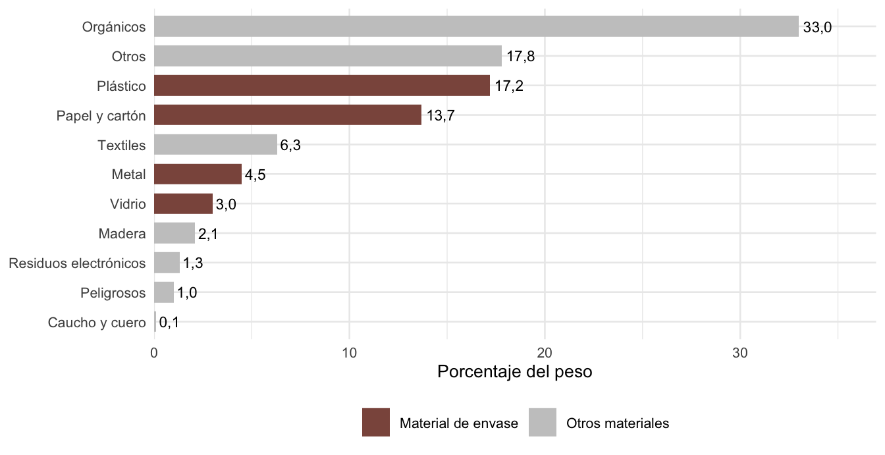
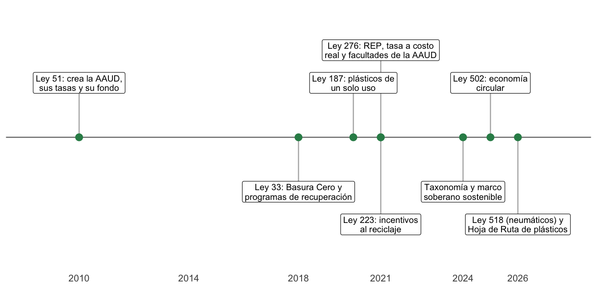
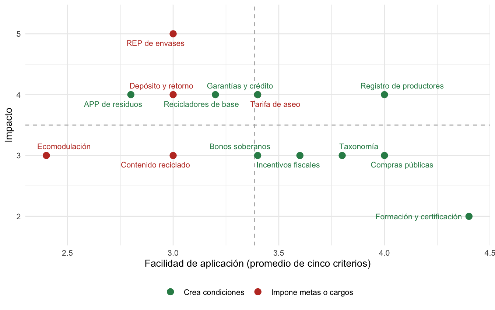
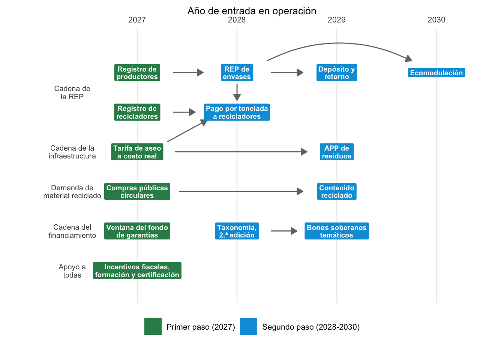
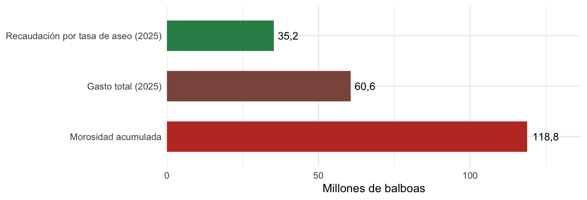
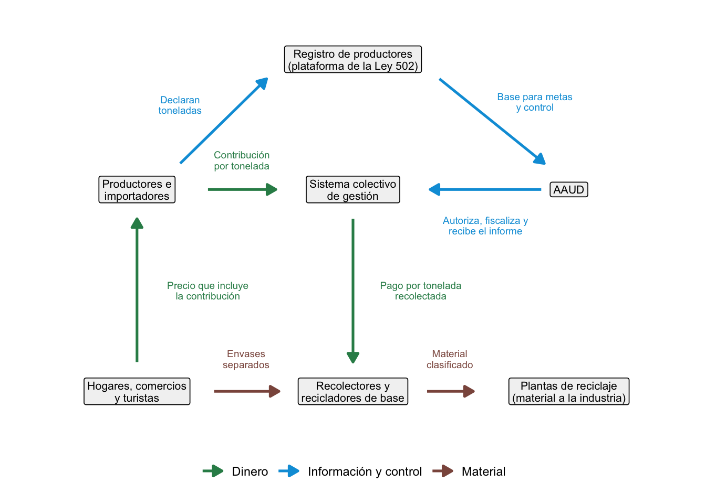
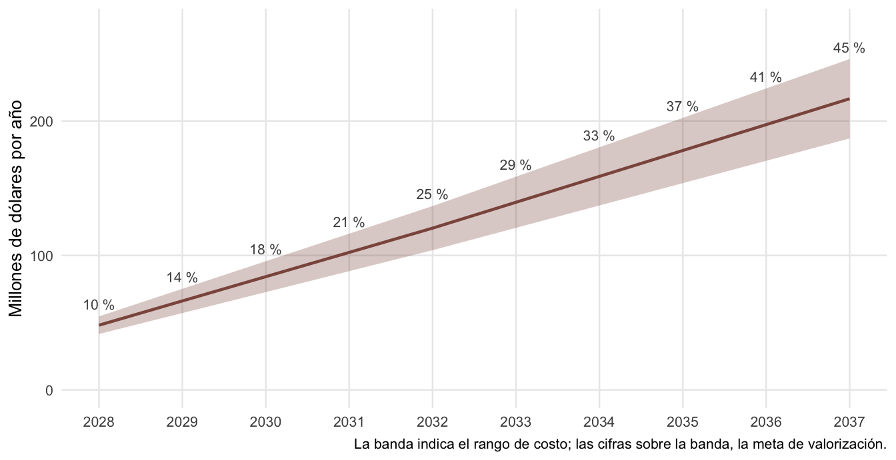
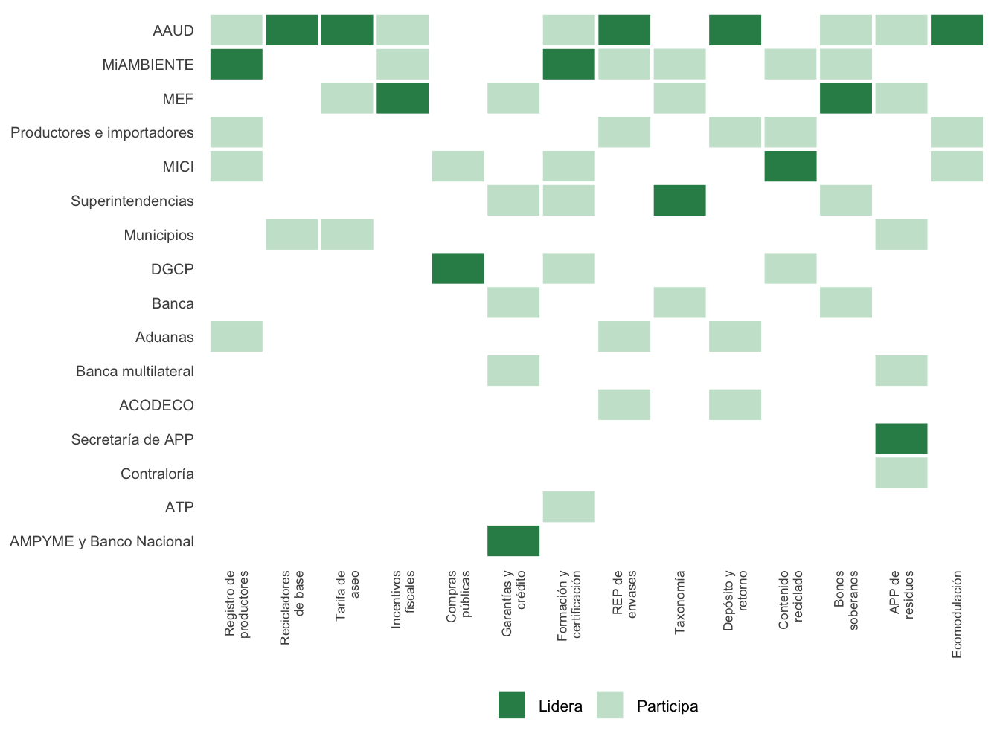

Sigla | Significado |
|---|---|
AAUD | Autoridad de Aseo Urbano y Domiciliario |
ACODECO | Autoridad de Protección al Consumidor y Defensa de la Competencia |
AMPYME | Autoridad de la Micro, Pequeña y Mediana Empresa |
APP | Asociación público-privada |
ATP | Autoridad de Turismo de Panamá |
BID | Banco Interamericano de Desarrollo |
CEPAL | Comisión Económica para América Latina y el Caribe |
DGCP | Dirección General de Contrataciones Públicas |
DGI | Dirección General de Ingresos |
DGNTI | Dirección General de Normas y Tecnología Industrial |
INADEH | Instituto Nacional de Formación Profesional y Capacitación para el Desarrollo Humano |
ITBMS | Impuesto de transferencia de bienes muebles y servicios |
MEF | Ministerio de Economía y Finanzas |
MiAMBIENTE | Ministerio de Ambiente |
MICI | Ministerio de Comercio e Industrias |
MINSA | Ministerio de Salud |
OCDE | Organización para la Cooperación y el Desarrollo Económicos |
PET | Tereftalato de polietileno |
REP | Responsabilidad extendida del productor |
SBP | Superintendencia de Bancos de Panamá |
SINIA | Sistema Nacional de Información Ambiental |
SMV | Superintendencia del Mercado de Valores |
SSRP | Superintendencia de Seguros y Reaseguros de Panamá |
Hoja de Ruta Nacional para el Financiamiento de la Economía Circular en Panamá
Diseño de instrumentos, pasos de implementación, actores y roles, fuentes de financiamiento, reformas e indicadores
Resumen ejecutivo
La transición hacia una economía circular, en la que los materiales se mantienen en uso en lugar de terminar en un relleno sanitario, necesita dinero. Hace falta pagar la recolección separada de los residuos, su clasificación y su reciclaje, invertir en plantas y equipos y dar acceso al crédito a los recicladores y a las pequeñas empresas que quieren participar. Hoy ese dinero no es suficiente. El servicio de aseo de la región metropolitana recauda poco más de la mitad de lo que cuesta, y el sistema de residuos no recibe ningún aporte de quienes ponen en el mercado los productos que se convierten en residuo. Esta Hoja de Ruta propone cómo movilizar esos recursos en Panamá entre 2027 y 2030 por medio de catorce instrumentos económicos y financieros, y funciona como un manual para las instituciones que deben aplicarlos. Para cada instrumento explica qué es y cómo funciona, quién es responsable de qué, los pasos de su implementación y su plazo, cuánto cuesta y quién paga, qué riesgos tiene y cómo se medirá.
La propuesta parte de dos estudios previos. El primero caracterizó con estadísticas oficiales los siete sectores de política donde la circularidad es más relevante, que son los seis que prioriza la Hoja de Ruta de Economía Circular del Ministerio de Ambiente y el turismo, y propuso los catorce instrumentos (Vargas, 2026a). El segundo evaluó su factibilidad y concluyó que casi todas las facultades legales que requieren ya existen en leyes vigentes, aunque faltan los reglamentos que las pongan en operación (Vargas, 2026b).
La Hoja de Ruta descansa en tres decisiones de diseño. La primera es usar las instituciones y las leyes que ya existen antes que crear nuevas. La Ley 276 de 2021 ya hace de la Autoridad de Aseo Urbano y Domiciliario (AAUD) la institución que propone las normas de responsabilidad extendida del productor (REP), el mecanismo que obliga a quien vende un producto a financiar su gestión cuando se convierte en residuo, y que autoriza los sistemas de depósito y retorno de envases (Asamblea Nacional de Panamá, 2021b, art. 74). La Ley 502 de 2025 encarga al Ministerio de Ambiente la plataforma de indicadores y la reglamentación de la ley (Asamblea Nacional de Panamá, 2025, arts. 11 y 13), y la Dirección General de Contrataciones Públicas ya tiene el mandato de incluir criterios de economía circular en las compras del Estado (Asamblea Nacional de Panamá, 2025, art. 12). La segunda decisión es empezar por lo que habilita todo lo demás, que es un registro de productores e importadores alimentado por las declaraciones de aduana. La tercera es que los instrumentos se financien sobre todo con aportes de quienes ponen productos en el mercado y de quienes usan el servicio de aseo, con apoyo de la banca multilateral para el crédito y las garantías.
Los instrumentos se ordenan en dos pasos y forman tres cadenas de dependencia. El primer paso, en 2027, crea las condiciones con siete instrumentos que solo requieren reglamentos y resoluciones: el registro de productores, el registro de los recicladores de base, la tarifa de aseo a costo real escalonada según el nivel socioeconómico, el reglamento de los incentivos fiscales vigentes, los criterios circulares en las compras públicas, una ventana circular en el Fondo de Garantías de Panamá y la formación y certificación. El segundo paso, entre 2028 y 2030, introduce las metas y los cargos. Incluye la REP de envases, con metas de valorización que empiezan en 10 % y llegan a 45 % al décimo año, el depósito y retorno de envases de bebidas, normas de contenido reciclado, una segunda edición de la taxonomía de finanzas sostenibles, una primera emisión de bonos soberanos para proyectos de residuos y agua, la asociación público-privada de residuos de Panamá y San Miguelito y, al final, la ecomodulación de las contribuciones de la REP. Los 58 pasos de implementación de este documento asignan a cada acción un responsable, un vehículo legal y un semestre.
Los montos de referencia muestran que los instrumentos movilizarían recursos considerables con un costo pequeño para los hogares. La REP de envases movilizaría entre 42 y 55 millones de dólares en su primer año de operación, aportados por productores e importadores, y entre 187 y 246 millones al décimo año. En promedio, eso equivale a entre 0,11 y 0,14 centavos de dólar por un envase de 20 gramos en el primer año. La tarifa de aseo a costo real cerraría una brecha anual de B/.25,4 millones entre lo que la AAUD recauda y lo que gasta (La Estrella de Panamá, 2026b). Una tasa de B/.10 por tonelada de residuos de construcción recaudaría hasta B/.10,7 millones al año. Aun si todo el cargo se trasladara a los precios, el costo de la canasta de consumo de los hogares subiría 0,21 % por cada punto porcentual de contribución de REP y 0,13 % por el cierre de la brecha del aseo (Vargas, 2026b).
Para lograrlo hacen falta una ley de REP con metas, sistemas colectivos de productores, sanciones y un depósito obligatorio; cuatro decretos que reglamenten las leyes 502, 276 y 223; resoluciones de la AAUD, de la Dirección General de Contrataciones Públicas y del Ministerio de Comercio e Industrias; acuerdos de las superintendencias para la taxonomía y acuerdos municipales para las tasas. El avance se medirá con catorce indicadores alineados con la plataforma que ordena la Ley 502, y el Ministerio de Ambiente los reportará cada tres años.
Lista de cuadros y figuras
Cuadros
- Cuadro 1: Glosario de siglas
- Cuadro 2: Estructura de cada ficha de instrumento
- Cuadro 3: Calendario de hitos
- Cuadro 4: Diseño de los instrumentos
- Cuadro 5: Pasos del registro de productores e importadores
- Cuadro 6: Pasos de la formalización de los recicladores de base
- Cuadro 7: Pasos de la tarifa de aseo a costo real
- Cuadro 8: Pasos de los incentivos fiscales
- Cuadro 9: Pasos de las compras públicas circulares
- Cuadro 10: Pasos de la ventana circular del Fondo de Garantías
- Cuadro 11: Pasos de la formación, la certificación y la información
- Cuadro 12: Trayectoria de la REP de envases
- Cuadro 13: Pasos de la REP de envases
- Cuadro 14: Pasos de la segunda edición de la taxonomía
- Cuadro 15: Pasos del depósito y retorno
- Cuadro 16: Pasos del contenido reciclado
- Cuadro 17: Pasos de la emisión soberana temática
- Cuadro 18: Pasos de la APP de residuos
- Cuadro 19: Pasos de la ecomodulación
- Cuadro 20: Montos anuales de referencia por fuente
- Cuadro 21: Fuentes de financiamiento
- Cuadro 22: Reformas normativas por nivel jurídico
- Cuadro 23: Contenido mínimo de la ley de REP
- Cuadro 24: Contenido mínimo del reglamento de la Ley 502
- Cuadro 25: Riesgos y medidas de mitigación
- Cuadro 26: Articulación con la Ley 502 y otros instrumentos nacionales
- Cuadro 27: Indicadores de seguimiento
Figuras
- Figura 1: Composición de los residuos municipales
- Figura 2: Leyes y políticas que forman el marco de la Hoja de Ruta
- Figura 3: Impacto y facilidad de aplicación de los instrumentos
- Figura 4: Las tres cadenas de dependencia entre instrumentos
- Figura 5: Cronograma de preparación y operación de los instrumentos
- Figura 6: Finanzas del servicio de aseo de la AAUD
- Figura 7: Cómo funciona la REP de envases
- Figura 8: Metas y costo anual de la REP de envases
- Figura 9: Actores que lideran y participan en cada instrumento
Glosario de siglas
El Cuadro 1 reúne las siglas usadas en el documento.
1 Introducción
Panamá decidió el rumbo de su transición hacia la economía circular con la Ley 502 de 2025, que declara la REP como uno de sus mecanismos y ordena un Plan Estratégico Nacional de Economía Circular (Asamblea Nacional de Panamá, 2025, arts. 2 y 10). Una ley marco como esa fija objetivos, pero no dice cuánto costará alcanzarlos, quién pagará ni por medio de qué instituciones. Esta Hoja de Ruta responde esas preguntas. Propone un conjunto de instrumentos económicos y financieros, los diseña para la realidad institucional, legal y financiera del país, los ordena en el tiempo y descompone cada uno en pasos concretos.
La Hoja de Ruta es el tercero de tres documentos que conforman esta secuencia. El primero relacionó las 80 actividades económicas de las cuentas nacionales con siete sectores de política, caracterizó cada uno con indicadores de producción, empleo, comercio, emisiones y residuos, y propuso catorce instrumentos económicos y financieros para mejorar la circularidad (Vargas, 2026a). El segundo evaluó la factibilidad política y técnica de esos instrumentos, estimó su efecto sobre los precios, revisó las capacidades de las instituciones públicas y analizó el sistema financiero (Vargas, 2026b). Este documento toma los resultados de ambos y los convierte en un plan de acción.
El documento forma parte de la cooperación técnica que la CEPAL presta al Ministerio de Ambiente, financiada por el programa CEPAL-BMZ/GIZ “Promoviendo la Economía Circular”. Sus cálculos se documentan en memorias de cálculo públicas1 y está pensado para que cada institución se oriente rápidamente en cuanto a lo que le corresponde. Las secciones de antecedentes y de arquitectura explican por qué se proponen estos instrumentos y en qué orden. Después, cada instrumento tiene su propia ficha dentro del paso al que pertenece. Como muestra el Cuadro 2, todas las fichas siguen la misma estructura, de modo que el lector que busca, por ejemplo, qué debe hacer la aduana o cuánto pagará un productor encuentre la respuesta en el mismo lugar de cada ficha. Las secciones finales reúnen lo transversal, que son los actores y sus roles, las fuentes de financiamiento, las reformas normativas, los riesgos, la articulación con otras políticas y los indicadores.
Elemento | Pregunta que responde |
|---|---|
Qué es y para qué sirve | Qué problema resuelve el instrumento y cuál es su mecanismo |
Cómo funciona en Panamá | Qué parámetros tiene, sobre qué ley se apoya y qué particularidades institucionales importan |
Cuánto cuesta y quién paga | Monto de referencia y fuente de los recursos |
Riesgos | Qué puede salir mal y cómo evitarlo |
Pasos | Qué acción concreta, a cargo de quién, con qué norma y en qué semestre |
Fuente: elaboración propia.
2 Objetivos
2.1 Objetivo general
Definir y diseñar los instrumentos económicos y financieros, aplicables a la realidad de Panamá, que pueden potenciar las iniciativas de economía circular, con sus responsables, pasos de implementación, fuentes de financiamiento, reformas normativas e indicadores de seguimiento.
2.2 Objetivos específicos
- Diseñar cada instrumento, incluida la REP, con parámetros, metas, montos de referencia y año de entrada en vigor.
- Descomponer cada instrumento en pasos de implementación con responsable, vehículo legal y plazo.
- Asignar los roles de los actores públicos y privados en la implementación, el monitoreo y la evaluación de los instrumentos.
- Identificar las fuentes de financiamiento nacionales e internacionales, públicas y privadas.
- Identificar las reformas normativas e institucionales necesarias según su nivel jurídico.
- Proponer indicadores para dar seguimiento al desempeño y al impacto de los instrumentos.
- Articular la propuesta con la Ley 502 y con los demás instrumentos nacionales de política.
3 Antecedentes
3.1 Por qué hace falta financiar la economía circular
Panamá genera 1,97 millones de toneladas de residuos municipales al año, y su sistema de recolección cubre 64 % de ese peso (Banco Mundial, 2024). El resto se quema, se entierra o termina en ríos, quebradas y playas. Lo que sí se recolecta va en su mayoría a rellenos sanitarios, de modo que materiales con valor, como el plástico, el papel o el aluminio, salen de la economía después de un solo uso. Como muestra la Figura 1, los residuos orgánicos son la fracción más grande, pero los cuatro materiales de envase (plástico, papel y cartón, vidrio y metal) suman 38 % del peso, unas 757 mil toneladas al año. Esa fracción es la que la REP de envases y el depósito buscan devolver a la producción.

Fuente: elaboración propia con datos del Banco Mundial (Banco Mundial, 2024).
Recuperar esos materiales cuesta dinero, y hoy no se paga lo suficiente. El Plan Nacional de Gestión Integral de Residuos estimó en 2017 que un modelo moderno de gestión costaría en promedio B/.84,31 por tonelada, de los cuales la venta de materiales y energía cubriría unos B/.15, y constató que el sistema de residuos no recibía ningún financiamiento de la REP (Autoridad de Aseo Urbano y Domiciliario, 2017, p. 123 y 266). En la región metropolitana, la AAUD recaudó en 2025 B/.35,2 millones por la tasa de aseo y gastó B/.60,6 millones (La Estrella de Panamá, 2026b). Los instrumentos de esta Hoja de Ruta existen para cerrar esa brecha haciendo que quienes ponen productos en el mercado paguen la gestión de sus residuos y que el servicio de aseo cobre lo que cuesta, y, además, abriendo el acceso al crédito a quienes invierten en recuperar materiales.
3.2 Los sectores de política
El estudio sectorial agrupó las actividades económicas en siete sectores de política, que son los seis de la Hoja de Ruta de Economía Circular (residuos; energía; recursos hídricos; industrias; agricultura y alimentos; ciudades y construcción) más el turismo, y documentó seis rasgos que orientan el diseño de los instrumentos (Vargas, 2026a). Los sectores que ponen productos envasados en el mercado importan más de lo que exportan, de modo que quienes paguen la REP serán en buena parte importadores y el instrumento tiene que apoyarse en la aduana. La informalidad supera 60 % del empleo en los sectores con más trabajadores, lo que obliga a acompañar los cargos con crédito y apoyo técnico. La construcción es el mayor sector de política por valor agregado y genera más de un millón de toneladas de residuos de obra al año. La energía y el agua, aunque pequeñas en las cuentas nacionales, atraen inversión y ya tienen marcos de financiamiento. El turismo es el principal exportador entre los sectores de política, emplea a más mujeres que hombres y está formado en su mayoría por microempresas. Por último, los residuos son un sector pequeño en valor agregado, pero es el que articula a todos los demás.
3.3 El marco legal
La Hoja de Ruta se apoya en un marco legal que Panamá acumuló en quince años y que ya contiene casi todas las piezas que necesitan los instrumentos. Como muestra la Figura 2, las piezas se agregaron una tras otra, desde la creación de la AAUD en 2010 hasta la Ley 502 de economía circular en 2025.

Fuente: elaboración propia con base en las leyes citadas en el texto.
La Ley 51 de 2010 creó la AAUD como responsable del servicio de aseo en la región metropolitana y le permitió fijar tasas según el nivel socioeconómico de los usuarios, cobrarlas en la factura eléctrica y administrar un fondo propio (Asamblea Nacional de Panamá, 2010). La Ley 33 de 2018 estableció la Política Basura Cero y obligó a los productores e importadores de bienes cuyos residuos requieren un manejo especial a establecer programas de recuperación, con la posibilidad de asociarse y de adoptar sistemas de depósito y retorno (Asamblea Nacional de Panamá, 2018, art. 6). La Ley 187 de 2020 ordenó reemplazar de forma progresiva los plásticos de un solo uso y repartió su control entre la aduana, ACODECO y el Ministerio de Salud (Asamblea Nacional de Panamá, 2020a, art. 15). La Ley 223 de 2021 exonera de impuestos por cinco años a las plantas de reciclaje que avala el Ministerio de Ambiente (Asamblea Nacional de Panamá, 2021a).
La pieza más importante es la Ley 276 de 2021, que reorganizó la gestión de los residuos sólidos. Adoptó la REP como principio, creó una tasa de gestión integral que debe incorporar el costo de todas las fases del servicio, otorgó incentivos fiscales al aprovechamiento y dio a la AAUD la facultad de proponer normas de REP y de autorizar los sistemas colectivos de productores y los de depósito (Asamblea Nacional de Panamá, 2021b, arts. 7, 52, 66 y 74). La Ley 502 de 2025 es una ley marco. Crea el Consejo Nacional de Economía Circular, un Plan Estratégico Nacional, una plataforma de indicadores y criterios de economía circular para las compras públicas, y deja su reglamentación al Órgano Ejecutivo por medio del Ministerio de Ambiente (Asamblea Nacional de Panamá, 2025, arts. 8-13). A ese marco se suman la Ley 518 de 2026, que ordena a la AAUD reglamentar un esquema en el que los importadores de neumáticos asumen el costo de su gestión por cada unidad importada (Asamblea Nacional de Panamá, 2026, art. 15), y la Hoja de Ruta de plásticos del Ministerio de Ambiente, que recomienda aprobar una ley de REP (Ministerio de Ambiente de Panamá, 2026b).
Una distinción constitucional determina qué vía legal requiere cada instrumento. Un tributo, como un impuesto, es un pago obligatorio al Estado que no corresponde a un servicio específico, y la Constitución exige que se establezca por ley, propuesta por una comisión permanente de la Asamblea o por el Ejecutivo con autorización del Consejo de Gabinete (República de Panamá, 2016, arts. 52, 159 y 165). Una tasa es el pago por un servicio que se recibe, como la recolección de la basura, y la fija quien presta el servicio, sea la AAUD o el municipio, después de una consulta ciudadana (Asamblea Nacional de Panamá, 2021b, arts. 16 y 75; Asamblea Legislativa de Panamá, 2002, arts. 24-25). Esa consulta tiene consecuencias prácticas, pues la Corte Suprema anuló en 2016 la tasa de aseo de San Miguelito por haberla omitido (La Prensa, 2016).
3.4 Lo que mostró la evaluación de factibilidad
La evaluación de factibilidad calificó cada instrumento de 1 a 5 en siete criterios, que son su impacto sobre los flujos de material, su factibilidad técnica, institucional, política y regulatoria y financiera, el tiempo que toma aplicarlo y su efecto sobre la equidad y la competitividad (Vargas, 2026b). Su hallazgo central es una disyuntiva. Como muestra la Figura 3, los instrumentos con más impacto, como la REP, el depósito y las alianzas público-privadas, son también los más difíciles de aplicar, y los más fáciles, como la formación o las compras públicas, tienen un efecto más indirecto. El registro de productores y el crédito con garantías combinan un impacto alto con una aplicación fácil, y por eso encabezan la secuencia.

Fuente: elaboración propia con base en la evaluación de factibilidad (Vargas, 2026b). La facilidad es el promedio de los criterios técnico, institucional, político y regulatorio, financiero y de tiempo. Las líneas punteadas marcan los promedios.
La evaluación arrojó otros cuatro resultados que esta Hoja de Ruta toma como punto de partida. El marco legal vigente permite iniciar doce de los catorce instrumentos con decretos, resoluciones o acuerdos, sin una ley nueva. La restricción más repetida es la falta de información sobre lo que se pone en el mercado, pues nadie sabe hoy cuántas toneladas de envases, aparatos o neumáticos venden los productores e importadores. Los cargos tendrían un efecto pequeño sobre los precios, y ningún escenario eleva la canasta de los hogares en más de un cuarto de punto porcentual. Por último, el sistema financiero tiene recursos y una arquitectura de finanzas sostenibles, pero su taxonomía todavía no tiene criterios para reconocer una inversión como circular, y en el piloto con siete bancos 99 % de la cartera verde elegible correspondía a la mitigación del cambio climático (Superintendencia de Bancos de Panamá, 2025b).
3.5 Las instituciones que aplicarán la Hoja de Ruta
Las instituciones que aplicarán los instrumentos tienen facultades amplias y medios desiguales. La AAUD es la única con las funciones de regular, registrar, recaudar, controlar y monitorear asignadas por ley para los residuos, pero en 2025 gastó B/.25,4 millones más de lo que recaudó, arrastra una morosidad de B/.118,8 millones (La Estrella de Panamá, 2026b) y su presupuesto para 2026 se recortó de B/.93,3 millones solicitados a B/.66,0 millones (TVN Noticias, 2025). El Estado en su conjunto está mejor equipado para vigilar que para cobrar y pagar, pues de quince instituciones revisadas nueve pueden monitorear de forma expresa y solo dos pueden financiar (Vargas, 2026b). Algunas instituciones clave son pequeñas. La DGCP, que debe fijar los criterios circulares de todas las compras públicas, tiene 110 funcionarios, y la Superintendencia del Mercado de Valores, 122 (Contraloría General de la República de Panamá, 2026). Por último, el Consejo Nacional de Economía Circular da voz y voto al Ministerio de Ambiente, al de Salud, al MICI y a representantes privados y de la sociedad civil, mientras que la AAUD solo tiene voz y el MEF, la aduana, ACODECO y la DGCP no lo integran (Asamblea Nacional de Panamá, 2025, arts. 8-9). Estos rasgos explican varias decisiones de diseño de la Hoja de Ruta, como empezar por sanear las finanzas del aseo y apoyar a las instituciones pequeñas con formatos estándar y sistemas que ya existen.
4 Arquitectura de la Hoja de Ruta
4.1 Principios de diseño
El diseño de los catorce instrumentos sigue cinco principios, cada uno derivado de la evidencia de los estudios previos y de la experiencia de otros países. El primero es aprovechar las instituciones y las leyes que ya existen antes de crear otras nuevas, lo que permite empezar en 2027 sin esperar una reforma legal.
El segundo es la secuencia. Ningún cargo entra en vigor antes de que el registro y el control funcionen, porque los impuestos y las obligaciones pierden eficacia cuando nadie los fiscaliza (Agencia Europea de Medio Ambiente, 2023). La experiencia de Ecuador lo ilustra. Su impuesto redimible de dos centavos por botella de plástico llegó a devolver más botellas de las que se vendieron en el país, porque entraban envases de los países vecinos para cobrar el reembolso, y entre 2012 y abril de 2014 su recaudación neta fue negativa en 9,6 millones de dólares (Servicio de Rentas Internas del Ecuador, 2014).
El tercero es la gradualidad. Las metas empiezan bajas y suben a medida que los sistemas ganan capacidad. En Chile, la meta de valorización de envases plásticos domiciliarios empezó en 3 % y llega a 45 % en el año doce, y la de vidrio va de 11 % a 65 % (Ministerio del Medio Ambiente de Chile, 2020b, art. 21); en Colombia, la meta global de aprovechamiento de envases empezó en 10 % en 2021 y llega a 30 % en 2030 (Ministerio de Ambiente y Desarrollo Sostenible de Colombia, 2018, art. 9). La propia Ley 276 consagra la gradualidad como principio (Asamblea Nacional de Panamá, 2021b, art. 7.2).
El cuarto es la inclusión. Los recicladores de base reciben un pago por cada tonelada recuperada, financiado con la REP y la tasa de aseo, y la tarifa se escalona según el nivel socioeconómico de los hogares, como ordena la ley (Asamblea Nacional de Panamá, 2021b, arts. 7.1 y 66). El quinto es que pague quien pone el producto en el mercado y quien usa el servicio, de modo que los recursos no dependan del presupuesto público, cuyo espacio es estrecho.
4.2 Dos pasos y tres cadenas
Los catorce instrumentos se ordenan en dos pasos. El primero crea las condiciones y el segundo introduce las metas y los cargos, que solo funcionan cuando esas condiciones existen. El orden responde a que los instrumentos dependen unos de otros y forman tres cadenas. Como muestra la Figura 4, la cadena de la REP empieza en el registro de productores, sigue con la REP de envases y el depósito y termina en la ecomodulación; la de la infraestructura empieza en la tarifa de aseo a costo real, que da a la AAUD el flujo de recursos que necesita una asociación público-privada y la del financiamiento empieza en la ventana del fondo de garantías y en la nueva edición de la taxonomía, que permite etiquetar los bonos y los créditos como circulares. La formación, los incentivos y las compras públicas apoyan a todas las cadenas desde el primer año.

Fuente: elaboración propia. Cada flecha indica que el instrumento de la derecha necesita al de la izquierda para funcionar.
Dos instrumentos merecen una aclaración sobre su lugar en la secuencia. La tarifa de aseo a costo real es un cargo, y la evaluación de factibilidad la clasificó con los instrumentos del segundo paso, pero esta Hoja de Ruta la adelanta a 2027 porque la Ley 276 ya la ordena y porque la AAUD necesita sanear sus finanzas antes de asumir la autorización y el control de los sistemas de REP. A la inversa, la segunda edición de la taxonomía, los bonos soberanos y la asociación público-privada no imponen cargos, pero toman de uno a tres años de preparación, de modo que entran en operación entre 2028 y 2029.
4.3 Cronograma y calendario de hitos
Cada instrumento tiene un período de preparación, en el que se dictan las normas y se arman los sistemas, y un período de operación. Como muestra la Figura 5, los siete instrumentos del primer paso se preparan en el primer semestre de 2027 y operan desde el segundo, mientras que los del segundo paso combinan preparaciones de uno a dos años con una entrada escalonada entre 2028 y 2030. La REP es el instrumento con la preparación más larga en relación con su arranque, porque requiere la ley, las resoluciones de la AAUD y la constitución de los sistemas colectivos. Como referencia, Chile dio 30 meses entre la publicación de su decreto de envases y la entrada en vigor de las metas (Ministerio del Medio Ambiente de Chile, 2020b, art. 47); Panamá puede acortar ese plazo porque su primer año opera con una meta baja, de 10 %, que funciona como un año de arranque.

Fuente: elaboración propia con base en los pasos de implementación de cada instrumento.
Los hitos son los pasos que marcan el avance de la Hoja de Ruta y que conviene vigilar desde el más alto nivel. Como muestra el Cuadro 3, el año 2027 concentra los hitos normativos (el reglamento de la Ley 502, el pliego tarifario, el reglamento de los incentivos, la resolución de compras y la ventana del fondo de garantías), el año 2028 los de arranque de la REP y de la taxonomía y los años 2029 y 2030 los de operación plena.
Plazo | Hito | Instrumento | Responsable |
|---|---|---|---|
2027, primer semestre | Incluir el registro en el reglamento de la Ley 502: obligados, datos por partida arancelaria y material, declaración anual y umbral para pequeños importadores | Registro de productores | MiAMBIENTE |
2027, primer semestre | Reglamentar los incentivos de la Ley 223 y del artículo 52 de la Ley 276, con una lista de equipos por partida | Incentivos fiscales | MEF |
2027, primer semestre | Fijar criterios de economía circular por categoría de compra (obra, papel, mobiliario y equipos) | Compras públicas | DGCP |
2027, primer semestre | Abrir la ventana circular en el reglamento del fondo: elegibilidad, cobertura y prima | Garantías y crédito | MEF, Banco Nacional y BID |
2027, primer semestre | Formar a analistas de crédito y compradores públicos en criterios circulares | Formación y certificación | MiAMBIENTE, DGCP y superintendencias |
2027, segundo semestre | Fijar requisitos graduales para que los recicladores se registren como gestores | Recicladores de base | Órgano Ejecutivo |
2027, segundo semestre | Presentar la ley de REP con flujos, metas, sistemas colectivos, sanciones y depósito obligatorio | REP de envases | Órgano Ejecutivo, con MiAMBIENTE y AAUD |
2027, segundo semestre | Aprobar y publicar el pliego a costo real escalonado | Tarifa de aseo | Junta Directiva de la AAUD |
2028, primer semestre | Recibir la primera declaración de productores e importadores, con 2027 como año base | Registro de productores | MiAMBIENTE y AAUD |
2028, primer semestre | Autorizar los sistemas colectivos y fijar la meta del primer año (10 %) | REP de envases | AAUD |
2028, primer semestre | Aprobar la segunda edición de la taxonomía | Taxonomía | Superintendencias |
2029, primer semestre | Instalar la red de retorno en comercios, hoteles y restaurantes e iniciar el cobro del depósito | Depósito y retorno | Administrador del sistema |
2029, primer semestre | Exigir áridos reciclados en los pliegos de obra pública | Contenido reciclado | DGCP |
2029, primer semestre | Firmar el contrato con refrendo de la Contraloría | APP de residuos | AAUD y Contraloría |
2029, primer semestre | Publicar el primer reporte trienal de indicadores de economía circular | Formación y certificación | MiAMBIENTE |
2029, segundo semestre | Emitir el primer bono y publicar su informe de asignación | Bonos soberanos | MEF |
2030, primer semestre | Aplicar recargos y bonificaciones en las contribuciones de los sistemas colectivos | Ecomodulación | Sistemas colectivos, con aprobación de la AAUD |
Fuente: elaboración propia.
4.4 Resumen del diseño
El Cuadro 4 muestra el diseño de los catorce instrumentos, ordenados por el año en que entrarían en operación, con sus parámetros principales, su meta y su monto de referencia. Es el cuadro de consulta de la Hoja de Ruta; las secciones siguientes desarrollan cada fila.
Instrumento | Inicio | Parámetros | Meta | Monto de referencia |
|---|---|---|---|---|
Registro de productores e importadores y trazabilidad | 2027 | Registro en la plataforma de la Ley 502, alimentado por las declaraciones aduaneras por partida; flujos iniciales: envases, aparatos eléctricos y electrónicos, neumáticos, aceites y baterías | Productores e importadores de los flujos iniciales inscritos | Costo administrativo |
Formalización e inclusión de recicladores de base | 2027 | Registro de recicladores como gestores con requisitos graduales (Ley 276, art. 50-51); pago por tonelada desde la REP y la tasa; certificación de competencias | Recicladores registrados y con pago por tonelada en los municipios con mayor generación | Pago por tonelada desde las contribuciones de la REP |
Tarifa de aseo a costo real, pago por generación y tasa de disposición final | 2027 | Tasa de gestión integral a costo real escalonada por nivel socioeconómico; pilotos de pago por generación en comercios, hoteles y restaurantes; tasa de disposición de B/.10 por tonelada de residuos de obra | Recaudación igual al costo del servicio | Cierra una brecha de B/.25,4 millones al año; la tasa de obra recauda hasta B/.10,7 millones |
Incentivos fiscales a la inversión circular | 2027 | Reglamento del MEF para los incentivos de la Ley 223 de 2021 y del art. 52 de la Ley 276, con lista de equipos elegibles y evaluación a los cinco años | Plantas de reciclaje y equipos acogidos | Gasto tributario acotado por la lista de bienes elegibles |
Compras públicas circulares | 2027 | Fichas técnicas con criterios de economía circular en PanamaCompra para obra, papel, mobiliario y equipos; preferencia por material reciclado nacional | Criterios circulares en los pliegos de obra pública | Neutral con costo del ciclo de vida |
Crédito verde, garantías y financiamiento combinado | 2027 | Ventana circular en el Fondo de Garantías de Panamá para recicladores, gestores y pymes, incluidas las turísticas, con cobertura adicional | Crédito garantizado a negocios circulares | Ventana dentro del fondo existente de US$150 millones |
Información, formación y certificación | 2027 | Formación de analistas de crédito y compradores públicos; certificación de recicladores; certificación de sostenibilidad turística; reporte trienal de indicadores | Primer reporte de indicadores de economía circular publicado | Presupuesto y cooperación técnica |
Responsabilidad extendida del productor con metas por flujo | 2028 | Sistemas colectivos autorizados por la AAUD; metas de valorización de 10 % (año 1), 25 % (año 5) y 45 % (año 10); auditoría independiente | 45 % de valorización de envases al décimo año | Costo de cumplimiento de US$42 a 55 millones en el primer año |
Criterios de economía circular en la taxonomía | 2028 | Segunda edición de la taxonomía con criterios de contribución sustancial a la economía circular en residuos, reciclaje, construcción y manufactura | Cartera bancaria alineada al objetivo circular reportada | Costo bajo |
Depósito y retorno de envases de bebidas | 2029 | Sistema de depósito para PET, aluminio y vidrio de bebidas, operado por los productores y autorizado por la AAUD; puntos de retorno en comercios, hoteles y restaurantes | 90 % de recolección separada de botellas, en línea con el estándar europeo para 2029 | Autofinanciado con depósitos no reclamados y venta de material |
Contenido reciclado y normas para el material secundario | 2029 | Norma DGNTI de áridos reciclados y de PET reciclado de grado alimentario; contenido mínimo gradual en botellas | Contenido reciclado de 25 % en botellas PET y uso de áridos reciclados en la obra pública | Sin costo fiscal |
Bonos temáticos y marco soberano | 2029 | Primera emisión soberana temática con proyectos de valorización de residuos y tratamiento de agua de la categoría circular del Marco de Financiamiento Sostenible | Una emisión con informe de asignación publicado | Según la cartera de proyectos preparada |
Alianzas público-privadas y mecanismos de promoción existentes | 2029 | Estructuración de la APP de residuos de Panamá y San Miguelito con pagos por desempeño y cláusulas de inclusión de recicladores | Capacidad de valorización contratada | Capital privado pagado con la tasa de gestión |
Ecomodulación de las contribuciones | 2030 | Tarifa con recargos y bonificaciones según reciclabilidad, monomaterial y contenido reciclado nacional | Diferencia de tarifa suficiente entre envases reciclables y no reciclables | Neutral en recaudación |
Fuente: elaboración propia con base en las memorias de cálculo 10 a 14.
5 Primer paso (2027): crear las condiciones
El primer paso reúne siete instrumentos que pueden empezar en 2027 porque solo requieren reglamentos, resoluciones o cambios en programas existentes. Son el registro de productores e importadores, la formalización de los recicladores de base, la tarifa de aseo a costo real, los incentivos fiscales vigentes, las compras públicas circulares, la ventana circular del Fondo de Garantías de Panamá y la formación, la certificación y la información. Juntos crean la información, los actores, los recursos y la demanda que necesitan los instrumentos del segundo paso.
5.1 Registro de productores e importadores
Qué es y para qué sirve. El registro es la lista oficial de las empresas que fabrican o importan los productos que se convierten en residuos, con las toneladas y los materiales que ponen en el mercado cada año. Es la base de cálculo de todo lo demás. Sin él no se puede fijar una meta de reciclaje, cobrar una contribución de REP, controlar un depósito ni saber si los instrumentos funcionan.
Cómo funciona en Panamá. El registro aprovecha que casi todo lo que se pone en el mercado pasa por la aduana o por una fábrica identificable. Las importaciones ya se declaran por partida arancelaria, que es el código que identifica cada tipo de producto, y el reglamento de la ley de plásticos ya exige una certificación del MICI para ciertas importaciones (Ministerio de Ambiente de Panamá, 2022, arts. 7-13). El registro se crea en el reglamento de la Ley 502 y vive en la plataforma de indicadores que esa ley ordena establecer en el Sistema Nacional de Información Ambiental (Asamblea Nacional de Panamá, 2025, arts. 11 y 13). La aduana entrega cada año las importaciones de las partidas de los flujos iniciales, que son envases, aparatos eléctricos y electrónicos, neumáticos, aceites y baterías, y los productores e importadores confirman o corrigen esos datos y agregan la producción nacional. Un umbral de exención evita cargar a los importadores muy pequeños, porque los grandes concentran el volumen. Una particularidad institucional importa aquí. El registro lo opera el Ministerio de Ambiente, pero quien autoriza y fiscaliza los sistemas de REP es la AAUD (Asamblea Nacional de Panamá, 2021b, art. 74), de modo que el reglamento debe garantizar que ambas instituciones compartan los mismos datos.
Cuánto cuesta y quién paga. El costo es administrativo y lo cubre el presupuesto del Ministerio de Ambiente y de la AAUD, porque el registro se monta sobre sistemas que ya existen. Para los obligados, el costo es una declaración anual.
Riesgos. El riesgo principal es la subdeclaración, que se reduce precargando el registro con los datos de aduana, cruzando las declaraciones con ellos y sancionando la omisión.
Pasos. Como muestra el Cuadro 5, el registro se arma en 5 pasos. Las normas y el convenio de datos se preparan en 2027, la primera declaración se recibe en el primer semestre de 2028 con 2027 como año base, y la primera publicación de toneladas por flujo sale en el segundo semestre de 2028, justo a tiempo para fijar las primeras metas de la REP.
Paso | Acción | Responsable | Vehículo | Plazo |
|---|---|---|---|---|
1 | Incluir el registro en el reglamento de la Ley 502: obligados, datos por partida arancelaria y material, declaración anual y umbral para pequeños importadores | MiAMBIENTE | Decreto ejecutivo | 2027, primer semestre |
2 | Firmar el convenio para que la aduana entregue las importaciones por partida de los flujos iniciales | MiAMBIENTE, Aduanas, AAUD y MICI | Convenio interinstitucional | 2027, primer semestre |
3 | Publicar la tabla que asigna cada partida a un flujo y un material, y abrir el formulario en la plataforma de indicadores | MiAMBIENTE | Resolución ministerial | 2027, segundo semestre |
4 | Recibir la primera declaración de productores e importadores, con 2027 como año base | MiAMBIENTE y AAUD | Plataforma de la Ley 502 | 2028, primer semestre |
5 | Cruzar las declaraciones con los datos de aduana y publicar las toneladas por flujo | MiAMBIENTE y AAUD | Plataforma de la Ley 502 | 2028, segundo semestre |
Fuente: elaboración propia.
5.2 Formalización e inclusión de los recicladores de base
Qué es y para qué sirve. Los recicladores de base son las personas que recuperan materiales de los residuos y los venden, a menudo de manera informal y sin protección social. Hoy son el eslabón que más material devuelve a la producción, y lo hacen sin pago por el servicio que prestan. La formalización los registra como gestores de residuos y les paga por cada tonelada que recuperan.
Cómo funciona en Panamá. La Ley 276 define a los recicladores y ordena que se les apliquen requisitos graduales para registrarse como gestores (Asamblea Nacional de Panamá, 2021b, arts. 50-51), y la Ley 33 los incluye en el sistema de información de residuos (Asamblea Nacional de Panamá, 2018). El último conteo disponible de esta población es de 2010, de modo que el primer paso es un censo en los distritos con mayor generación de residuos. El pago por tonelada se financia con las contribuciones de la REP y con la tasa de aseo, y llega a través de los contratos de los sistemas colectivos. La experiencia de la región muestra que el registro funciona a escala, pues Colombia tiene 76.707 recicladores registrados que prestan el servicio de aprovechamiento (Superintendencia de Servicios Públicos Domiciliarios, 2025), y Chile exige que al menos la mitad de las instalaciones de recepción de envases incorporen recicladores de base (Ministerio del Medio Ambiente de Chile, 2020b, art. 41).
Cuánto cuesta y quién paga. El censo y el registro tienen un costo administrativo para la AAUD y los municipios. El pago por tonelada lo cubren las contribuciones de la REP desde 2028.
Riesgos. Que los intermediarios se queden con el pago, lo que se evita pagando directamente a los recicladores registrados y trazando las toneladas, y que el depósito o la asociación público-privada los desplacen, lo que se evita incorporándolos como operadores de los puntos de retorno y de las plantas.
Pasos. Como muestra el Cuadro 6, el censo, el reglamento y la inscripción se hacen en 2027, y el pago por tonelada empieza en el segundo semestre de 2028, cuando los sistemas colectivos de la REP contratan la recolección.
Paso | Acción | Responsable | Vehículo | Plazo |
|---|---|---|---|---|
1 | Censar a los recicladores de base en los distritos con mayor generación de residuos | AAUD y municipios | Resolución de la AAUD | 2027, primer semestre |
2 | Fijar requisitos graduales para que los recicladores se registren como gestores | Órgano Ejecutivo | Reglamento de la Ley 276 | 2027, segundo semestre |
3 | Inscribir a los recicladores en el sistema de información de la AAUD y certificar sus competencias | AAUD e INADEH | Sistema de información de residuos | 2027, segundo semestre |
4 | Pagar por tonelada recuperada con las contribuciones de la REP y la tasa de aseo | Sistemas colectivos y AAUD | Contratos de los sistemas colectivos | 2028, segundo semestre |
5 | Incluir a los recicladores en la red de retorno del depósito y en la APP de residuos | AAUD y Secretaría de APP | Pliegos y autorizaciones | 2029, primer semestre |
Fuente: elaboración propia.
5.3 Tarifa de aseo a costo real
Qué es y para qué sirve. La tarifa de aseo es lo que pagan los hogares y los comercios por la recolección y la disposición de sus residuos. Cuando cobra menos de lo que cuesta el servicio, la diferencia la cubre el presupuesto público o se convierte en deudas y en un servicio deficiente. Cobrar el costo real da al servicio recursos estables y, si se cobra según la cantidad de residuos, premia a quienes separan.
Cómo funciona en Panamá. La brecha está documentada. Como muestra la Figura 6, en 2025 la AAUD recaudó B/.35,2 millones y gastó B/.60,6 millones, y la morosidad acumulada de sus usuarios, B/.118,8 millones, casi duplica su gasto anual (La Estrella de Panamá, 2026b). Cerrar esa brecha es un mandato legal, porque la Ley 51 ordena que el pliego tarifario refleje el costo económico del servicio, con un subsidio cruzado entre niveles socioeconómicos y una revisión cada dos años (Asamblea Nacional de Panamá, 2010, arts. 8-9), y la Ley 276 ordena que la tasa incorpore el costo de todas las fases del servicio (Asamblea Nacional de Panamá, 2021b, arts. 66 y 75).

Fuente: elaboración propia con datos de la AAUD publicados por La Estrella de Panamá (La Estrella de Panamá, 2026b).
El diseño propuesto tiene tres componentes. El primero es una tasa residencial a costo real escalonada por nivel socioeconómico, de modo que los hogares de menores ingresos paguen menos y el aumento recaiga en quienes pueden pagarlo. Como referencia de magnitud, el Plan Nacional de Gestión Integral de Residuos estimó en 2017 que su modelo de gestión requería una tasa de entre B/.115,82 y B/.136,77 al año por hogar (Autoridad de Aseo Urbano y Domiciliario, 2017, p. 266). El segundo son pilotos de pago por generación, en los que comercios, hoteles y restaurantes pagan según la cantidad de residuos mezclados que producen; ese sistema opera en 20 Estados de la Unión Europea (Agencia Europea de Medio Ambiente, 2023). El tercero es una tasa de disposición de B/.10 por tonelada de residuos de construcción, similar al costo de operación del relleno de Cerro Patacón (TVN, 2023), que recaudaría hasta B/.10,7 millones al año y se aplicaría solo donde existan sitios autorizados para recibir y valorizar esos residuos. Conviene tener claro el propósito de esa tasa. Su función inicial es financiar los sitios autorizados y registrar las toneladas, pues para cambiar la conducta de las empresas tendría que acercarse a los 100 euros por tonelada, nivel a partir del cual en Europa es más probable reciclar la mitad de los residuos (Agencia Europea de Medio Ambiente, 2013).
Dos particularidades institucionales facilitan la aplicación. La primera es que la AAUD ya cobra en la factura eléctrica, y desde 2026 lo hace en San Miguelito por medio de un convenio de cinco años (Consejo de Gabinete de Panamá, 2026), lo que reduce la morosidad porque el pago se une a un servicio que los hogares no dejan de pagar. La segunda es que la Autoridad de Turismo integra la Junta Directiva de la AAUD (Asamblea Nacional de Panamá, 2010, art. 11), lo que permite coordinar en la misma mesa las tarifas de los destinos turísticos. En esos destinos, la Hoja de Ruta propone que los municipios con mayor afluencia de visitantes complementen la tasa con un cargo por visitante destinado a la gestión de residuos. Hay un precedente en el país, pues Taboga cobra desde 2025 un dólar por visitante para la limpieza de la isla (La Estrella de Panamá, 2025), y uno internacional en el impuesto de estancias turísticas de las Islas Baleares, cuyo fondo da prioridad a los proyectos de agua y residuos (Comunidad Autónoma de las Illes Balears, 2016).
Cuánto cuesta y quién paga. La tarifa cierra una brecha de B/.25,4 millones al año, que pagan los usuarios del servicio según su nivel socioeconómico. Su efecto sobre la canasta de consumo de los hogares sería de 0,13 % aun si todo el aumento se trasladara a los precios (Vargas, 2026b).
Riesgos. El rechazo social y la anulación judicial si se omite la consulta, que se previenen con una consulta ciudadana completa y con una mejora visible del servicio, y el vertido ilegal si sube el costo de disposición sin alternativas, que se previene aplicando la tasa de obra solo donde haya sitios autorizados.
Pasos. Como muestra el Cuadro 7, el estudio de costos y la consulta ciudadana ocupan el primer semestre de 2027, el pliego se aprueba en el segundo, los pilotos de pago por generación empiezan en 2028 y la tasa de obra y la primera revisión bienal llegan en 2029.
Paso | Acción | Responsable | Vehículo | Plazo |
|---|---|---|---|---|
1 | Estudiar el costo del servicio por fase y por distrito, y definir la escala socioeconómica | AAUD | Estudio tarifario | 2027, primer semestre |
2 | Someter el pliego tarifario a consulta ciudadana | AAUD | Consulta de la Ley 6 de 2002 | 2027, primer semestre |
3 | Aprobar y publicar el pliego a costo real escalonado | Junta Directiva de la AAUD | Resolución | 2027, segundo semestre |
4 | Extender el cobro en la factura eléctrica y aplicar un plan de recuperación de la morosidad | AAUD con las distribuidoras | Convenios | 2027, segundo semestre |
5 | Probar el pago por generación en comercios, hoteles y restaurantes | AAUD y municipios | Resolución | 2028, primer semestre |
6 | Aplicar la tasa de disposición de residuos de obra donde existan sitios autorizados | AAUD y municipios | Resolución o acuerdo municipal | 2029, primer semestre |
7 | Revisar el pliego cada dos años según el costo del servicio | Junta Directiva de la AAUD | Resolución | 2029, segundo semestre |
Fuente: elaboración propia.
5.4 Incentivos fiscales
Qué es y para qué sirve. Los incentivos fiscales reducen los impuestos que pagan quienes invierten en reciclaje y aprovechamiento de residuos, lo que baja el costo de los equipos y mejora la rentabilidad de las plantas.
Cómo funciona en Panamá. Los incentivos ya están en la ley y lo que falta es hacerlos operativos. La Ley 223 de 2021 exonera por cinco años del impuesto sobre la renta, del impuesto de dividendos y de los aranceles de los equipos a las plantas de reciclaje que avala el Ministerio de Ambiente (Asamblea Nacional de Panamá, 2021a). La Ley 276 reduce la tasa del impuesto sobre la renta a 15 % para el aprovechamiento de residuos y exime del ITBMS la compraventa de residuos valorizados y la importación de maquinaria de aprovechamiento (Asamblea Nacional de Panamá, 2021b, art. 52). El MEF debe reglamentar estos beneficios con una lista cerrada de equipos elegibles por partida arancelaria, que la DGI pueda verificar, y el Ministerio de Ambiente debe fijar el procedimiento de aval de las plantas. La Hoja de Ruta no propone incentivos nuevos, porque el espacio fiscal es estrecho. Los ingresos tributarios del Gobierno Central equivalen a cerca de 7 % del producto interno bruto (Instituto Nacional de Estadística y Censo (INEC), 2026) y la regla fiscal reduce el déficit permitido hasta 1,5 % del producto en 2030 (García Armuelles, 2026).
Cuánto cuesta y quién paga. El costo es gasto tributario, es decir, impuestos que el Estado deja de cobrar, acotado por la lista de bienes elegibles.
Riesgos. Que los incentivos premien inversiones que se harían de todas formas, lo que se controla con la lista cerrada, con un reporte anual del gasto tributario y con una evaluación a los cinco años.
Pasos. Como muestra el Cuadro 8, el reglamento y el procedimiento de aval se dictan en el primer semestre de 2027, el primer reporte de gasto tributario se publica en 2028 y la evaluación se hace en 2032.
Paso | Acción | Responsable | Vehículo | Plazo |
|---|---|---|---|---|
1 | Reglamentar los incentivos de la Ley 223 y del artículo 52 de la Ley 276, con una lista de equipos por partida | MEF | Decreto ejecutivo | 2027, primer semestre |
2 | Establecer el procedimiento de aval de las plantas de reciclaje | MiAMBIENTE | Resolución | 2027, primer semestre |
3 | Publicar cada año el gasto tributario y la inversión acogida | MEF | Informe anual | 2028, segundo semestre |
4 | Evaluar los incentivos a los cinco años | MEF y MiAMBIENTE | Evaluación | 2032, primer semestre |
Fuente: elaboración propia.
5.5 Compras públicas circulares
Qué es y para qué sirve. El Estado es el mayor comprador del país, sobre todo de obra pública. Si sus pliegos exigen materiales reciclados o productos reparables, crea una demanda estable para el material que recuperan los recicladores y las plantas.
Cómo funciona en Panamá. El mandato ya existe. La Ley 502 modificó la ley de contrataciones para que la DGCP establezca criterios de economía circular en las compras de todas las entidades (Asamblea Nacional de Panamá, 2025, art. 12), la Ley 33 ordena priorizar insumos reutilizables y reciclables en las compras públicas (Asamblea Nacional de Panamá, 2018, art. 28) y la Ley 276 ordena fomentar la compra de productos con material reciclado nacional (Asamblea Nacional de Panamá, 2021b, art. 53). La DGCP opera el sistema PanamaCompra y la tienda virtual de convenios marco (Asamblea Nacional de Panamá, 2020b, art. 15), que son los dos lugares donde los criterios llegan a todas las entidades a la vez. Como la DGCP tiene 110 funcionarios (Contraloría General de la República de Panamá, 2026), conviene empezar por pocas categorías de alto volumen (obra, papel, mobiliario y equipos) y por fichas técnicas estándar que las entidades puedan copiar.
Cuánto cuesta y quién paga. Las compras no tienen costo adicional si se evalúan por el costo del ciclo de vida. Las pagan las entidades compradoras con su presupuesto ordinario.
Riesgos. Licitaciones desiertas si no hay oferta nacional de material reciclado, que se evitan con criterios graduales y con obras piloto antes de la obligación.
Pasos. Como muestra el Cuadro 9, la resolución con los criterios se dicta en el primer semestre de 2027, las fichas técnicas y la etiqueta de PanamaCompra se implementan en el segundo, y las primeras obras piloto con materiales reciclados se licitan en 2028.
Paso | Acción | Responsable | Vehículo | Plazo |
|---|---|---|---|---|
1 | Fijar criterios de economía circular por categoría de compra (obra, papel, mobiliario y equipos) | DGCP | Resolución | 2027, primer semestre |
2 | Incorporar los criterios en las fichas técnicas y los convenios marco | DGCP | Fichas técnicas | 2027, segundo semestre |
3 | Crear una etiqueta en PanamaCompra para medir las compras circulares | DGCP | Sistema PanamaCompra | 2027, segundo semestre |
4 | Licitar obras piloto con materiales reciclados | Entidades compradoras | Pliegos | 2028, primer semestre |
Fuente: elaboración propia.
5.6 Ventana circular del Fondo de Garantías de Panamá
Qué es y para qué sirve. Una garantía parcial cubre una parte de la pérdida del banco si el deudor no paga. Con ella, los bancos pueden prestar a recicladores, gestores de residuos y pequeñas empresas con proyectos circulares, a quienes hoy consideran demasiado riesgosos por su tamaño y por la falta de historial.
Cómo funciona en Panamá. El fondo ya existe y tiene una ventaja que pocos instrumentos tienen. Se creó con un préstamo de 150 millones de dólares del BID, lo administra el Banco Nacional como fiduciario para las micro, pequeñas y medianas empresas del agro, el comercio y los servicios, y la Superintendencia de Bancos lo reconoce como mitigante del riesgo de crédito al calcular las provisiones de los bancos (Superintendencia de Bancos de Panamá, 2025a). Ese reconocimiento hace que un crédito garantizado le cueste menos capital al banco. La ventana circular se abre en el reglamento del fideicomiso, con criterios de elegibilidad, una cobertura o una prima preferente y un reporte semestral. Es el instrumento con más potencial para el turismo, cuyo grupo de hoteles y restaurantes está formado en su gran mayoría por microempresas con acceso limitado al crédito (Vargas, 2026a).
Cuánto cuesta y quién paga. La ventana se abre dentro del fondo existente, con recursos del BID por medio del MEF. Su costo es la pérdida esperada de las garantías que se ejecuten.
Riesgos. Morosidad y criterios de elegibilidad laxos, que se controlan con criterios claros, con la formación de los analistas de crédito y con el reporte semestral del fiduciario.
Pasos. Como muestra el Cuadro 10, la ventana se abre en el primer semestre de 2027 y las primeras operaciones se garantizan en el segundo, de modo que es uno de los primeros instrumentos en mover recursos.
Paso | Acción | Responsable | Vehículo | Plazo |
|---|---|---|---|---|
1 | Abrir la ventana circular en el reglamento del fondo: elegibilidad, cobertura y prima | MEF, Banco Nacional y BID | Reglamento del fideicomiso | 2027, primer semestre |
2 | Capacitar a los analistas de crédito de los bancos participantes | MiAMBIENTE y Banco Nacional | Programa de formación | 2027, segundo semestre |
3 | Garantizar las primeras operaciones y reportar cada semestre | Banco Nacional | Informe del fiduciario | 2027, segundo semestre |
Fuente: elaboración propia.
5.7 Formación, certificación e información
Qué es y para qué sirve. Los demás instrumentos necesitan personas que sepan aplicarlos, como analistas de crédito que reconozcan un proyecto circular, compradores públicos que redacten un pliego con criterios circulares o recicladores con competencias certificadas. También necesitan información pública que permita saber si la Hoja de Ruta avanza.
Cómo funciona en Panamá. La Ley 502 asigna funciones de formación y de información al Ministerio de Ambiente, al MICI y a otras instituciones (Asamblea Nacional de Panamá, 2025, arts. 5-7 y 11). La certificación de competencias de los recicladores puede hacerla el INADEH, y la de sostenibilidad turística, la Autoridad de Turismo, con referentes cercanos como el Certificado de Sostenibilidad Turística de Costa Rica (Instituto Costarricense de Turismo, 2026) y en línea con el plan maestro de turismo sostenible 2025-2030, que incluye acciones de reducción de plásticos y el programa Bandera Azul (Autoridad de Turismo de Panamá, 2025). La pieza de información es el reporte trienal del estado de la economía circular que la Ley 502 encarga al Ministerio de Ambiente (Asamblea Nacional de Panamá, 2025, art. 11).
Cuánto cuesta y quién paga. El presupuesto de las instituciones y la cooperación técnica internacional.
Riesgos. Programas sin continuidad, que se evitan atándolos a los demás instrumentos, por ejemplo, exigiendo la formación de los analistas para operar la ventana del fondo de garantías.
Pasos. Como muestra el Cuadro 11, la formación de analistas y compradores empieza en el primer semestre de 2027, la certificación de recicladores en el segundo, la de turismo en 2028 y el primer reporte trienal se publica en 2029.
Paso | Acción | Responsable | Vehículo | Plazo |
|---|---|---|---|---|
1 | Formar a analistas de crédito y compradores públicos en criterios circulares | MiAMBIENTE, DGCP y superintendencias | Programa de formación | 2027, primer semestre |
2 | Certificar las competencias de los recicladores | INADEH | Programa de certificación | 2027, segundo semestre |
3 | Lanzar la certificación de sostenibilidad turística | ATP | Resolución | 2028, primer semestre |
4 | Publicar el primer reporte trienal de indicadores de economía circular | MiAMBIENTE | Plataforma de la Ley 502 | 2029, primer semestre |
Fuente: elaboración propia.
6 Segundo paso (2028-2030): metas y cargos
El segundo paso reúne siete instrumentos que dependen de las condiciones creadas en 2027 o que requieren una preparación más larga. Son la REP de envases, la segunda edición de la taxonomía, el depósito y retorno de envases de bebidas, el contenido reciclado, la emisión soberana temática, la asociación público-privada de residuos y la ecomodulación. Los cuatro primeros imponen metas u obligaciones a los productores y a la banca; los otros tres movilizan inversión y ajustan los incentivos de la REP.
6.1 Responsabilidad extendida del productor de envases
Qué es y para qué sirve. La REP de envases es el instrumento de mayor impacto y el que más recursos moviliza. Su idea es sencilla. Quien pone en el mercado un producto envasado debe pagar por la recolección y el reciclaje de ese envase cuando se convierte en residuo, en lugar de que lo paguen los municipios con los recursos de todos los contribuyentes.
Cómo funciona. El sistema involucra a seis actores que se relacionan por tres tipos de flujos, que son el dinero, el material y la información y el control. Como muestra la Figura 7, los productores e importadores declaran en el registro las toneladas que ponen en el mercado y pagan una contribución por tonelada a un sistema colectivo, que es una organización sin fines de lucro creada por ellos mismos y autorizada por la AAUD. El sistema usa esos recursos para pagar a los recolectores y a los recicladores de base por cada tonelada recolectada y clasificada, y ese material llega a las plantas de reciclaje, que lo devuelven a la industria. La AAUD autoriza el sistema, fija sus metas con base en el registro, recibe su informe anual auditado y sanciona a quien incumple. Los hogares y los comercios separan los envases y pagan, en el precio del producto, la contribución que trasladan los productores.

Fuente: elaboración propia con base en la Ley 276 de 2021 (Asamblea Nacional de Panamá, 2021b) y en el diseño del sistema chileno de envases (Ministerio del Medio Ambiente de Chile, 2020b).
Particularidades en Panamá. Tres decisiones de diseño adaptan el modelo a las condiciones del país. La primera es que la REP puede empezar con resoluciones de la AAUD, porque la Ley 276 le da la facultad de proponer las normas de REP y de autorizar los sistemas de gestión (Asamblea Nacional de Panamá, 2021b, art. 74), aunque las metas con sanciones propias y el depósito obligatorio necesitan la ley de REP que se describe en la sección de reformas. La segunda es que buena parte de los obligados son importadores, de modo que la aduana es el principal control contra la evasión. La tercera es que la REP de neumáticos ya está en marcha, porque la Ley 518 de 2026 ordenó a la AAUD reglamentar un esquema en el que los importadores asumen el costo por unidad importada (Asamblea Nacional de Panamá, 2026, art. 15), y conviene que ambos esquemas compartan el registro y las reglas de autorización.
Metas y montos. La trayectoria de metas sigue la lógica de Chile y Colombia, que empezaron con metas de un dígito o cercanas a 10 % y las subieron a lo largo de una década. Aquí se propone una meta media para todos los materiales de 10 % en el primer año, 25 % en el quinto y 45 % en el décimo. Para estimar el costo se usó la experiencia de Chile, el país de la región con un sistema de REP de envases en operación. Su primer sistema colectivo de envases domiciliarios estimó un costo de entre 380.000 y 500.000 pesos chilenos por tonelada valorizada (ReSimple y Ministerio del Medio Ambiente de Chile, 2024), que equivalen a entre 549 y 722 dólares con el tipo de cambio de 692 pesos por dólar del estudio de impacto chileno (Ministerio del Medio Ambiente de Chile, 2020a). Ese costo por tonelada se multiplicó por las toneladas que habría que valorizar en Panamá para cumplir cada meta. Como muestra la Figura 8, el costo del sistema crecería de entre 42 y 55 millones de dólares en 2028 a entre 187 y 246 millones en 2037. Estas cifras son un techo por dos razones. La base de toneladas incluye materiales que no son envases, y el peso chileno se ha depreciado desde que se hizo el estudio.

Fuente: elaboración propia con datos de residuos del Banco Mundial (Banco Mundial, 2024) y costos del sistema colectivo de envases de Chile (Ministerio del Medio Ambiente de Chile, 2020a; ReSimple y Ministerio del Medio Ambiente de Chile, 2024). Entre los años 1, 5 y 10 la meta se interpola de forma lineal.
Para un productor, la pregunta práctica es cuánto pagará por lo que vende. Si el sistema debe valorizar una fracción del envase puesto en el mercado y cada tonelada valorizada cuesta lo que cuesta en Chile, la contribución media por tonelada puesta en el mercado es la meta multiplicada por ese costo. Como muestra el Cuadro 12, en el primer año la contribución media sería de entre 55 y 72 dólares por tonelada, es decir, entre 0,11 y 0,14 centavos por un envase de 20 gramos, y al décimo año llegaría a entre 0,49 y 0,65 centavos. Son promedios para todos los materiales, porque en la práctica cada material tiene su propia tarifa, pero muestran que el costo por unidad es pequeño aunque el total sea grande. La OCDE estima que la administración de estos sistemas representa entre 5 % y 10 % del costo total, y que la mayor parte se va en la recolección y la clasificación (Organización para la Cooperación y el Desarrollo Económicos, 2016a).
Año | Meta (%) | Toneladas valorizadas | Costo total (millones de US$) | Contribución por tonelada puesta en el mercado (US$) | Por envase de 20 g (centavos de US$) |
|---|---|---|---|---|---|
2028 | 10 | 75.683 | 42 a 55 | 55 a 72 | 0,11 a 0,14 |
2030 | 18 | 132.445 | 73 a 96 | 96 a 126 | 0,19 a 0,25 |
2032 | 25 | 189.207 | 104 a 137 | 137 a 181 | 0,27 a 0,36 |
2035 | 37 | 280.026 | 154 a 202 | 203 a 267 | 0,41 a 0,53 |
2037 | 45 | 340.573 | 187 a 246 | 247 a 325 | 0,49 a 0,65 |
Fuente: elaboración propia con base en los mismos datos de la figura anterior. El peso de 20 gramos es ilustrativo, cercano al de una botella plástica pequeña.
Riesgos. Cuatro riesgos requieren atención desde el diseño. Los importadores que no se inscriben, que se controlan con el registro precargado con datos de aduana; la concentración de mercado en los sistemas colectivos, que se controla con licitaciones competitivas de los servicios y con la opinión de ACODECO, como recomienda la OCDE (Organización para la Cooperación y el Desarrollo Económicos, 2016a); que los recursos de la REP terminen cubriendo el déficit del aseo, que se evita porque los administran los sistemas colectivos en lugar de la AAUD y las metas imposibles de verificar, que se evitan con la auditoría independiente.
Pasos. Como muestra el Cuadro 13, la ley y la norma de REP de envases se preparan en el segundo semestre de 2027, los sistemas colectivos se constituyen y se autorizan en el primer semestre de 2028 con la meta de 10 %, las licitaciones de recolección se hacen en el segundo semestre y el primer informe auditado se publica en 2029.
Paso | Acción | Responsable | Vehículo | Plazo |
|---|---|---|---|---|
1 | Presentar la ley de REP con flujos, metas, sistemas colectivos, sanciones y depósito obligatorio | Órgano Ejecutivo, con MiAMBIENTE y AAUD | Proyecto de ley | 2027, segundo semestre |
2 | Dictar la norma de REP de envases y los requisitos para autorizar sistemas colectivos (plan de gestión, garantía y auditoría) | Junta Directiva de la AAUD | Resolución | 2027, segundo semestre |
3 | Constituir los sistemas colectivos y presentar sus planes de gestión | Productores e importadores | Plan de gestión | 2028, primer semestre |
4 | Autorizar los sistemas colectivos y fijar la meta del primer año (10 %) | AAUD | Resolución | 2028, primer semestre |
5 | Licitar la recolección y la clasificación, con participación de los recicladores registrados | Sistemas colectivos | Licitación privada | 2028, segundo semestre |
6 | Publicar el primer informe auditado de cumplimiento y revisar la senda de metas | Sistemas colectivos y AAUD | Informe anual | 2029, primer semestre |
Fuente: elaboración propia.
6.2 Segunda edición de la taxonomía de finanzas sostenibles
Qué es y para qué sirve. La taxonomía es una lista de actividades económicas con criterios técnicos que indican cuándo una actividad contribuye de forma sustancial a un objetivo ambiental, de modo que un banco o un inversionista pueda llamar verde a un crédito o a un bono con fundamento. Sin criterios circulares, la economía circular es invisible para el sistema financiero.
Cómo funciona en Panamá. Panamá adoptó su Taxonomía de Finanzas Sostenibles en 2024 e incluyó la transición hacia una economía circular entre sus siete objetivos, pero en esta primera edición solo definió criterios de contribución sustancial para la mitigación del cambio climático y la adaptación a él (Superintendencia de Bancos de Panamá et al., 2024, pp. 43-44). Por eso, la guía para bancos indica que las operaciones circulares deben marcarse como contingentes hasta que una edición posterior fije los criterios (Superintendencia de Bancos de Panamá, 2025b). La segunda edición tiene ya un punto de partida, pues la edición vigente contiene, como requisitos de no causar daño, la recolección segregada, el compostaje y el aprovechamiento de residuos como materia prima en la gestión de residuos y la reutilización o el reciclaje de al menos 20 % de los desechos de obra en la construcción (Superintendencia de Bancos de Panamá et al., 2024, pp. 90, 93 y 100), y su gobernanza incluye un grupo técnico de gestión de residuos (Superintendencia de Bancos de Panamá et al., 2024, p. 29). Basta convertir esos requisitos en criterios de contribución sustancial.
Cuánto cuesta y quién paga. El costo es bajo y lo cubren las superintendencias con apoyo de la cooperación técnica.
Riesgos. Criterios demasiado exigentes para las empresas pequeñas, que se evitan con criterios simplificados para pymes, y etiquetas verdes sin sustento, que se evitan con revisión externa.
Pasos. Como muestra el Cuadro 14, los criterios se redactan en el segundo semestre de 2027, la segunda edición se aprueba en el primer semestre de 2028 y el reporte de la cartera alineada empieza en el segundo.
Paso | Acción | Responsable | Vehículo | Plazo |
|---|---|---|---|---|
1 | Redactar criterios de contribución sustancial para residuos, reciclaje, construcción y manufactura | Superintendencias con MiAMBIENTE y MEF | Grupo técnico de la taxonomía | 2027, segundo semestre |
2 | Aprobar la segunda edición de la taxonomía | Superintendencias | Acuerdo | 2028, primer semestre |
3 | Pedir a los bancos que reporten su cartera alineada, de forma progresiva | SBP | Acuerdo | 2028, segundo semestre |
Fuente: elaboración propia.
6.3 Depósito y retorno de envases de bebidas
Qué es y para qué sirve. En un sistema de depósito y retorno, el consumidor paga un pequeño monto adicional al comprar una bebida envasada y lo recupera al devolver el envase vacío. El depósito es un incentivo para devolver el envase, y lo que se recauda por los envases que no se devuelven ayuda a financiar el sistema. Es el instrumento con la evidencia internacional más sólida, con tasas de recolección superiores a 85 % en los sistemas europeos que operan plenamente (Sidorczuk-Pietraszko et al., 2025).
Cómo funciona en Panamá. El sistema propuesto cubre las botellas de PET, las latas de aluminio y el vidrio de bebidas, y lo operan los productores dentro de la REP de envases, con un administrador único autorizado por la AAUD (Asamblea Nacional de Panamá, 2021b, art. 74). La red de retorno incluye comercios, hoteles y restaurantes, lo que da al turismo un papel activo, y la meta es acercarse al estándar europeo de 90 % de recolección separada de botellas para 2029 (Parlamento Europeo y Consejo de la Unión Europea, 2025, art. 50). La particularidad de Panamá es su exposición al fraude, porque tiene fronteras terrestres con dos países y una zona libre de comercio. Antes de cobrar el primer depósito, los envases deben llevar una marca que identifique que se pusieron en el mercado panameño, y la aduana debe controlar su entrada. Sin ese control se repetiría el caso de Ecuador, donde se devolvieron más botellas de las que se vendieron (Servicio de Rentas Internas del Ecuador, 2014).
Cuánto cuesta y quién paga. El sistema se autofinancia con los depósitos no reclamados y la venta del material. Un costo de operación igual a 1 % del valor de la producción de bebidas elevaría la canasta de los hogares en 0,013 % (Vargas, 2026b).
Riesgos. El fraude por envases importados sin depósito y el desplazamiento de los recicladores, que se evitan con el marcaje, el control en frontera y la incorporación de los recicladores a la red de retorno.
Pasos. Como muestra el Cuadro 15, el diseño y el marcaje se preparan durante 2028, el administrador se autoriza en el segundo semestre de ese año y el cobro del depósito empieza en el primer semestre de 2029.
Paso | Acción | Responsable | Vehículo | Plazo |
|---|---|---|---|---|
1 | Diseñar el sistema: envases cubiertos, monto del depósito, red de retorno y marcaje | AAUD con los productores de bebidas | Estudio de diseño | 2028, primer semestre |
2 | Marcar los envases y registrar las bebidas puestas en el mercado; controlar la entrada por fronteras y zona libre | Productores, Aduanas y AAUD | Ley de REP y resolución | 2028, segundo semestre |
3 | Autorizar al administrador del sistema | AAUD | Resolución | 2028, segundo semestre |
4 | Instalar la red de retorno en comercios, hoteles y restaurantes e iniciar el cobro del depósito | Administrador del sistema | Plan de operación | 2029, primer semestre |
Fuente: elaboración propia.
6.4 Contenido reciclado
Qué es y para qué sirve. Una norma de contenido reciclado obliga a que ciertos productos incorporen un porcentaje mínimo de material recuperado. Crea demanda para lo que recolectan la REP y el depósito, y cierra el círculo.
Cómo funciona en Panamá. El MICI elabora los reglamentos técnicos por medio de su Dirección General de Normas y Tecnología Industrial, y ya existe un precedente de obligación, pues la Ley 518 de 2026 obliga a usar caucho reciclado en el asfalto (Asamblea Nacional de Panamá, 2026). La Hoja de Ruta propone dos normas. La primera es una norma de áridos reciclados para la construcción, que la DGCP puede exigir en los pliegos de obra pública. La segunda es una norma de PET reciclado de grado alimentario con un contenido mínimo gradual en las botellas, hasta 25 %, que es el nivel que la Unión Europea exige desde 2025 (Parlamento Europeo y Consejo de la Unión Europea, 2019).
Cuánto cuesta y quién paga. No tiene costo fiscal. Lo pagan los productores, en la medida en que el material reciclado sea más caro que el virgen.
Riesgos. Que la oferta nacional de material reciclado de calidad no alcance, lo que se evita con metas graduales que empiezan después de que la REP y el depósito aumentan la oferta.
Pasos. Como muestra el Cuadro 16, las normas técnicas se aprueban en el segundo semestre de 2028, la exigencia en la obra pública empieza en 2029 y el contenido mínimo en botellas se fija en el segundo semestre de ese año.
Paso | Acción | Responsable | Vehículo | Plazo |
|---|---|---|---|---|
1 | Aprobar normas técnicas de áridos reciclados y de PET reciclado de grado alimentario | MICI (DGNTI) | Reglamento técnico | 2028, segundo semestre |
2 | Exigir áridos reciclados en los pliegos de obra pública | DGCP | Resolución | 2029, primer semestre |
3 | Fijar un contenido mínimo gradual de PET reciclado en botellas, hasta 25 % | Órgano Ejecutivo | Decreto ejecutivo | 2029, segundo semestre |
Fuente: elaboración propia.
6.5 Emisión soberana temática
Qué es y para qué sirve. Un bono temático es un título de deuda cuyos fondos se destinan a proyectos con beneficios ambientales o sociales. Una emisión soberana de este tipo daría a los proyectos públicos de residuos y agua acceso a financiamiento de largo plazo y obligaría al Estado a reportar en qué se usaron los recursos.
Cómo funciona en Panamá. El marco ya existe. El Marco de Financiamiento Sostenible de la República incluye una categoría de prevención y control de la contaminación con procesos de economía circular, que abarca el reciclaje, la reutilización, la reparación y el reacondicionamiento de residuos, y una evaluación independiente lo calificó de forma favorable (Ministerio de Economía y Finanzas de Panamá, 2024; Sustainable Fitch, 2024). El marco solo financia inversión pública incluida en el presupuesto, de modo que el trabajo previo es identificar los proyectos de residuos y agua que califican. Hasta ahora no se ha emitido un bono bajo ese marco, y la estrategia de deuda de mediano plazo 2025-2029 no menciona los bonos temáticos (Ministerio de Economía y Finanzas de Panamá, 2025), por lo que el primer paso es incluir la emisión en esa estrategia.
Cuánto cuesta y quién paga. Lo pagan los contribuyentes como cualquier deuda pública, dentro de los límites de la regla fiscal; el costo adicional de la etiqueta es el de la revisión externa y los informes.
Riesgos. Una cartera de proyectos demasiado pequeña, que se evita preparándola desde 2028 con la AAUD y el Ministerio de Ambiente.
Pasos. Como muestra el Cuadro 17, la cartera de proyectos y la estrategia de deuda se preparan en 2028 y la primera emisión se hace en el segundo semestre de 2029.
Paso | Acción | Responsable | Vehículo | Plazo |
|---|---|---|---|---|
1 | Identificar los proyectos presupuestados de residuos y agua que califican | MEF con AAUD y MiAMBIENTE | Cartera de proyectos | 2028, primer semestre |
2 | Incluir la emisión temática en la estrategia de deuda | MEF | Estrategia de deuda | 2028, segundo semestre |
3 | Emitir el primer bono y publicar su informe de asignación | MEF | Resolución del MEF | 2029, segundo semestre |
Fuente: elaboración propia.
6.6 Asociación público-privada de residuos de Panamá y San Miguelito
Qué es y para qué sirve. Una asociación público-privada es un contrato de largo plazo en el que una empresa privada financia, construye y opera una infraestructura pública a cambio de pagos que dependen de su desempeño. Permite construir plantas de clasificación y valorización a una escala que el presupuesto de la AAUD no alcanza.
Cómo funciona en Panamá. La Ley 93 de 2019 regula estas asociaciones, con un monto mínimo de B/.15 millones salvo en los proyectos municipales (Asamblea Nacional de Panamá, 2019, art. 6). La AAUD y el MEF pidieron al BID los estudios de prefactibilidad de un proyecto de gestión integral de residuos para Panamá y San Miguelito, que son los distritos más poblados, y la decisión de usar la modalidad corresponde al Consejo de Gabinete (Banco Interamericano de Desarrollo, 2024). El contrato debe incluir pagos por desempeño (por ejemplo, por tonelada valorizada) y cláusulas de inclusión de los recicladores. Su viabilidad depende de la tarifa a costo real, porque el operador privado necesita un flujo de pagos confiable durante todo el contrato y de que el contrato tenga el refrendo de la Contraloría, cuya ausencia hizo que se cuestionaran los contratos de recolección que la AAUD firmó en San Miguelito en 2026 (Mojica, 2026).
Cuánto cuesta y quién paga. El capital lo pone el operador privado, con posible apoyo del BID y de la banca local, y lo recupera con los pagos que financia la tasa de gestión.
Riesgos. Contratos cuestionados y un flujo de residuos insuficiente, que se previenen con licitación pública, refrendo previo y estudios de flujo.
Pasos. Como muestra el Cuadro 18, la prefactibilidad se completa en 2027, la modalidad se decide y se licita en 2028 y el contrato se firma en el primer semestre de 2029.
Paso | Acción | Responsable | Vehículo | Plazo |
|---|---|---|---|---|
1 | Completar la prefactibilidad de la APP de residuos de Panamá y San Miguelito | AAUD y MEF con el BID | Estudio | 2027, segundo semestre |
2 | Decidir la modalidad de APP | Consejo de Gabinete | Resolución de Gabinete | 2028, primer semestre |
3 | Licitar con pagos por desempeño y cláusulas de inclusión de recicladores | Secretaría de APP y AAUD | Licitación de la Ley 93 | 2028, segundo semestre |
4 | Firmar el contrato con refrendo de la Contraloría | AAUD y Contraloría | Contrato | 2029, primer semestre |
Fuente: elaboración propia.
6.7 Ecomodulación de las contribuciones
Qué es y para qué sirve. La ecomodulación ajusta la contribución que paga cada productor según qué tan reciclable es su envase. Mantiene el monto total que recauda el sistema y lo redistribuye, de modo que pagan menos quienes usan envases reciclables, de un solo material o con contenido reciclado, y más quienes usan envases difíciles de reciclar. Así la REP financia el reciclaje y además premia el rediseño.
Cómo funciona en Panamá. La ecomodulación es el último instrumento de la secuencia porque solo puede operar cuando los sistemas colectivos ya cobran contribuciones. En Chile, el decreto de envases fija la tarifa en proporción a los envases introducidos, con recargos y bonificaciones según su dificultad de recolección y de valorización y según el uso de material reciclado nacional (Ministerio del Medio Ambiente de Chile, 2020b, art. 20). En Panamá, los criterios de reciclabilidad los definen la AAUD y la Dirección General de Normas y Tecnología Industrial, y los sistemas colectivos los aplican con aprobación de la AAUD.
Cuánto cuesta y quién paga. Es neutral en recaudación. Lo que unos productores pagan de más, otros lo pagan de menos.
Riesgos. Diferencias de tarifa demasiado pequeñas para cambiar el diseño de los envases, lo que se vigila con una revisión cada dos años.
Pasos. Como muestra el Cuadro 19, los criterios se definen en el segundo semestre de 2029, la ecomodulación se aplica desde 2030 y su efecto se revisa en 2032.
Paso | Acción | Responsable | Vehículo | Plazo |
|---|---|---|---|---|
1 | Definir criterios de reciclabilidad por tipo de envase | AAUD y MICI (DGNTI) | Resolución | 2029, segundo semestre |
2 | Aplicar recargos y bonificaciones en las contribuciones de los sistemas colectivos | Sistemas colectivos, con aprobación de la AAUD | Tarifas de los sistemas | 2030, primer semestre |
3 | Revisar cada dos años si la diferencia de tarifa cambia el diseño de los envases | AAUD | Informe de evaluación | 2032, primer semestre |
Fuente: elaboración propia.
7 Actores y roles
7.1 Quién lidera y quién participa
Los instrumentos funcionan solo si cada actor sabe qué le corresponde hacer. La matriz de roles se armó a partir de los pasos de implementación y de las funciones que las leyes asignan a cada institución. Como muestra la Figura 9, la AAUD lidera cinco de los catorce instrumentos, todos los de residuos, y participa en otros cinco, lo que confirma que su capacidad financiera y operativa es la condición de la que depende la mayor parte de la Hoja de Ruta. El Ministerio de Ambiente y el MEF lideran dos instrumentos cada uno y participan en varios más, y los productores e importadores participan en cinco, siempre en los instrumentos que les imponen obligaciones.

Fuente: elaboración propia con base en los pasos de implementación y en las funciones legales de cada institución. Los instrumentos están ordenados por su año de entrada en operación.
7.2 Qué le corresponde a cada actor
Autoridad de Aseo Urbano y Domiciliario. Lidera la tarifa a costo real, la REP, el depósito, la ecomodulación y la formalización de los recicladores. Dicta las normas de REP por flujo, autoriza y fiscaliza los sistemas colectivos y el administrador del depósito, aprueba el pliego tarifario con consulta ciudadana y opera el sistema de información de residuos. Su primera tarea es sanear sus finanzas con la tarifa escalonada, separar en su contabilidad los recursos de la tasa de los que provengan de la REP y reducir la morosidad con el cobro en la factura eléctrica.
Ministerio de Ambiente. Reglamenta la Ley 502, opera el registro de productores y la plataforma de indicadores, avala las plantas de reciclaje que reciben incentivos, coordina la formación y publica el reporte trienal. Tiene cinco fondos de destino específico, ninguno de economía circular (Asamblea Nacional de Panamá, 2015), de modo que conviene abrir una subcuenta de economía circular en uno de ellos para financiar el registro y la plataforma.
Ministerio de Economía y Finanzas. Reglamenta los incentivos fiscales y reporta su costo, prepara la emisión soberana temática, coordina con el Banco Nacional y el BID la ventana del fondo de garantías y participa en la decisión de la asociación público-privada. La Ley 502 no le asigna ningún papel, de modo que su participación debe asegurarse en el reglamento.
Aduana, MICI y ACODECO. Forman la cadena de control que ya funciona para la ley de plásticos, en la que la aduana restringe las importaciones y entrega las estadísticas, el MICI certifica los productos y ACODECO sanciona su comercio; esta última impuso 397 sanciones por la ley de bolsas entre 2019 y junio de 2026 (La Estrella de Panamá, 2026a). En la Hoja de Ruta, la aduana alimenta el registro y controla en frontera los envases del depósito, el MICI dicta las normas técnicas de contenido reciclado y de reciclabilidad, y ACODECO controla el comercio y opina sobre la competencia en los sistemas colectivos.
Dirección General de Contrataciones Públicas. Lidera las compras públicas circulares y exige áridos reciclados en la obra pública. Como es una institución pequeña, su trabajo se apoya en fichas técnicas estándar y en la etiqueta de PanamaCompra.
Superintendencias. Las de bancos, mercado de valores y seguros lideran la segunda edición de la taxonomía, y la de bancos pide el reporte de la cartera alineada y reconoce las garantías del fondo.
AMPYME y Banco Nacional. Operan la ventana circular del fondo de garantías, el Banco Nacional como fiduciario y la AMPYME con su registro de empresas pequeñas.
Municipios. Regulan la separación de residuos, fijan tasas donde prestan el servicio, censan a los recicladores con la AAUD y pueden cobrar cargos por visitante en los destinos turísticos.
Autoridad de Turismo. Lanza la certificación de sostenibilidad turística y, desde la Junta Directiva de la AAUD, coordina las tarifas de los destinos.
Productores e importadores. Se inscriben en el registro, constituyen los sistemas colectivos, financian la REP y el depósito y marcan sus envases.
Banca y banca multilateral. Los bancos otorgan los créditos garantizados y suscriben los bonos; el BID financia el fondo de garantías y la preparación de la asociación público-privada.
7.3 Coordinación, monitoreo y evaluación
La coordinación requiere una instancia que reúna a quienes regulan, recaudan y controlan. La composición del Consejo Nacional de Economía Circular está fijada en la Ley 502 y no incluye al MEF, a la aduana, a ACODECO ni a la DGCP, mientras que la AAUD solo tiene voz (Asamblea Nacional de Panamá, 2025, arts. 8-9). Como un reglamento no puede cambiar esa composición, la Hoja de Ruta propone que el reglamento de la Ley 502 cree una comisión técnica de financiamiento y control del Consejo, en la que participen de forma permanente esas cinco instituciones. La comisión daría seguimiento semestral al calendario de hitos y prepararía el reporte de indicadores que el Ministerio de Ambiente debe publicar cada tres años (Asamblea Nacional de Panamá, 2025, art. 11). La Contraloría General de la República fiscaliza el uso de los fondos públicos y refrenda los contratos de gestión de residuos (Contraloría General de la República de Panamá, 1984).
8 Fuentes de financiamiento
La mayor parte de los recursos que movilizan los instrumentos no proviene del presupuesto público. Como muestra el Cuadro 20, los flujos anuales más grandes son los de la REP (que pagan los productores e importadores) y los de la tarifa de aseo y la tasa de obra, que pagan los usuarios; a ellos se suman el fondo de garantías existente y los bonos verdes que ya emite una empresa de reciclaje. Los flujos de la REP crecen con las metas y en el décimo año superarían varias veces la brecha actual del servicio de aseo.
Fuente | Quién paga | Monto de referencia | Naturaleza |
|---|---|---|---|
REP de envases, primer año | Productores e importadores | US$42 a 55 millones | Flujo anual privado |
REP de envases, quinto año | Productores e importadores | US$104 a 137 millones | Flujo anual privado |
REP de envases, décimo año | Productores e importadores | US$187 a 246 millones | Flujo anual privado |
Tarifa de aseo a costo real | Usuarios del servicio | B/.25,4 millones adicionales | Flujo anual público |
Tasa de disposición de residuos de obra | Empresas de construcción | Hasta B/.10,7 millones | Flujo anual público |
Fondo de Garantías de Panamá | BID, por medio del MEF | US$150 millones (fondo total, no solo circular) | Fondo existente |
Bonos verdes de una empresa de reciclaje | Inversionistas | US$16,5 millones vigentes | Emisiones existentes |
Fuente: elaboración propia con base en las secciones anteriores, en la AAUD (La Estrella de Panamá, 2026b), en el Fondo de Garantías (Superintendencia de Bancos de Panamá, 2025a) y en Latinex (Bolsa Latinoamericana de Valores (Latinex), 2026).
Las fuentes pueden ordenarse por su origen y por su tipo. Como muestra el Cuadro 21, las nacionales privadas (contribuciones de REP, depósitos y bonos corporativos) financian los instrumentos de residuos, las nacionales públicas (tasas, presupuesto, gasto tributario y deuda) financian el servicio de aseo, el registro, las compras y la infraestructura y las internacionales (BID, Fondo Verde del Clima y cooperación técnica) financian las garantías, la preparación de proyectos y el diseño. El sistema bancario tiene la escala para financiar proyectos circulares, pues su cartera de crédito local supera los 60.000 millones de dólares (Superintendencia de Bancos de Panamá, 2026), pero necesita los criterios de la taxonomía y las garantías del fondo para atender a negocios que hoy considera de riesgo alto. Entre las fuentes internacionales, el Fondo Verde del Clima tiene un programa para instituciones financieras locales (Green Climate Fund, 2026).
Fuente | Origen | Tipo | Instrumentos que financia | Base |
|---|---|---|---|---|
Contribuciones de los productores a sistemas de REP | Nacional | Privado | REP, ecomodulación, pago a recicladores | Ley 276, art. 7.8; Ley 51, art. 6-A |
Depósitos no reclamados y venta de material | Nacional | Privado | Depósito y retorno | Ley 51, art. 6-A num. 14 |
Tasa de gestión integral de residuos y Fondo de Aseo | Nacional | Público | Tarifa a costo real, APP de residuos, recicladores | Ley 276, art. 66 y 76 |
Tasa de disposición final de residuos de obra | Nacional | Público | Infraestructura de valorización de residuos de obra | Ley 276, art. 16 y 75 |
Presupuesto General del Estado | Nacional | Público | Registro, compras públicas, formación | Ley 276, art. 80 |
Gasto tributario | Nacional | Público | Incentivos fiscales | Ley 223 de 2021; Ley 276, art. 52 |
Bonos soberanos temáticos | Nacional | Público | Infraestructura de residuos y agua | Marco de Financiamiento Sostenible de 2024 |
Bonos temáticos corporativos en Latinex | Nacional | Privado | Empresas de reciclaje y gestión | Guía de bonos temáticos de la SMV (2025) |
Crédito bancario con garantía parcial | Nacional | Mixto | Pymes, recicladores y turismo | Fondo de Garantías de Panamá; Acuerdo 8-2025 de la SBP |
Banco Interamericano de Desarrollo y BID Invest | Internacional | Multilateral | Garantías, APP de residuos, líneas verdes | Contratos de préstamo |
Fondo Verde del Clima | Internacional | Concesional | Líneas para instituciones financieras locales | Programa FP149 |
Cooperación técnica (CEPAL, GIZ y otras) | Internacional | Donación | Diseño, formación e indicadores | Convenios |
Fuente: elaboración propia.
9 Reformas normativas e institucionales
9.1 Reformas por nivel jurídico
Las normas que hacen falta se ordenan por su nivel jurídico, desde la ley hasta el acuerdo municipal, porque cada nivel tiene un emisor, un procedimiento y un plazo distintos. Una ley la aprueba la Asamblea Nacional, un decreto ejecutivo lo emite el Órgano Ejecutivo, una resolución la dicta la institución que tiene la facultad y un acuerdo municipal lo aprueba el concejo de cada municipio. Como muestra el Cuadro 22, solo una reforma requiere una ley, la de REP con metas, sistemas colectivos, sanciones y depósito obligatorio. Las demás son reglamentos, resoluciones y acuerdos, y la más urgente es el reglamento de la Ley 502, porque crea el registro de productores sobre el que descansan los instrumentos del segundo paso.
Nivel | Reforma | Emisor | Instrumentos |
|---|---|---|---|
Ley | Ley de responsabilidad extendida del productor con metas por flujo, sistemas colectivos, sanciones y régimen del depósito obligatorio | Asamblea Nacional (iniciativa del Ejecutivo) | REP de envases; Ecomodulación; Depósito y retorno |
Decreto ejecutivo | Reglamento de la Ley 502: registro de productores, plataforma de indicadores e instalación del Consejo Nacional de Economía Circular | Órgano Ejecutivo por medio de MiAMBIENTE | Registro de productores; Formación y certificación |
Decreto ejecutivo | Reglamento de la Ley 276: gradualidad para recicladores, residuos de manejo especial y obligaciones de REP | Órgano Ejecutivo | Recicladores de base; REP de envases; Tarifa de aseo |
Decreto ejecutivo | Reglamento de los incentivos de la Ley 223 y del art. 52 de la Ley 276 | Órgano Ejecutivo por medio del MEF | Incentivos fiscales |
Decreto ejecutivo | Reglamento del art. 53 de la Ley 276 sobre compras de material reciclado nacional | Órgano Ejecutivo | Compras públicas |
Resolución | Normas de REP por flujo y autorización de sistemas de gestión y de depósito | Junta Directiva de la AAUD | REP de envases; Depósito y retorno |
Resolución | Pliego tarifario de la tasa de gestión integral a costo real, con consulta ciudadana | Junta Directiva de la AAUD | Tarifa de aseo |
Resolución | Fichas técnicas y pliegos con criterios de economía circular | DGCP | Compras públicas |
Resolución | Normas técnicas de áridos reciclados y PET reciclado | MICI (DGNTI) | Contenido reciclado |
Acuerdo de superintendencia | Segunda edición de la taxonomía y reporte de cartera alineada | SBP, SMV y SSRP | Taxonomía |
Resolución | Ventana circular del Fondo de Garantías | MEF y fiduciario | Garantías y crédito |
Acuerdo municipal | Tasas de aseo a costo real y separación obligatoria en municipios que prestan el servicio | Concejos municipales | Recicladores de base; Tarifa de aseo |
Fuente: elaboración propia con base en la Constitución y en las leyes 502 de 2025, 276 de 2021, 223 de 2021, 51 de 2010 y 22 de 2006.
9.2 Contenido de la ley de REP
La ley de REP es la reforma de mayor jerarquía y conviene que llegue a la Asamblea con un contenido completo. Como muestra el Cuadro 23, la ley debe definir quién es productor, qué productos cubre, qué obligaciones tiene cada productor, cómo se autorizan los sistemas colectivos, quién fija las metas, cómo se cobran las contribuciones, cómo se incluye a los recicladores, cómo funciona el depósito obligatorio, cómo se protege la competencia y quién sanciona. Cada elemento tiene un referente en la experiencia internacional o en la ley panameña vigente.
Elemento | Contenido | Referencia |
|---|---|---|
Ámbito | Envases y embalajes primero; después aparatos eléctricos y electrónicos, neumáticos (en coordinación con la Ley 518), aceites y baterías | Chile, Ley 20.920, art. 10 |
Productor | Fabricante o importador que pone el producto por primera vez en el mercado panameño, incluidas las ventas a distancia | OCDE (2016) |
Obligaciones | Inscribirse en el registro, declarar lo que pone en el mercado, financiar la gestión y cumplir metas | Chile, Ley 20.920 |
Sistemas de gestión | Colectivos o individuales, sin fines de lucro, autorizados por la AAUD, con plan de gestión, garantía financiera y auditoría independiente | Chile, D.S. 12, arts. 20-23 |
Metas | Senda de diez años fijada por decreto, con metas iniciales bajas y flexibilidad entre materiales en los primeros años | Chile, D.S. 12, art. 21 |
Contribuciones | Cobradas por los sistemas por tonelada puesta en el mercado, con ecomodulación; no ingresan al Tesoro | OCDE (2016) |
Recicladores de base | Participación en la recolección y en la mitad de las instalaciones de recepción, con precio no inferior al de otros proveedores | Chile, D.S. 12, art. 41 |
Depósito obligatorio | Envases de bebidas cubiertos, depósito mínimo, administrador único y devolución en el punto de venta | UE, Reglamento 2025/40, art. 50 |
Competencia | Licitación competitiva de los servicios y opinión de ACODECO al autorizar los sistemas | OCDE (2016) |
Control y sanciones | La AAUD fiscaliza y sanciona; la aduana controla en frontera; multas escalonadas por gravedad | Ley 276, arts. 71-74 |
Transparencia | Informe anual auditado de cada sistema, publicado en la plataforma de la Ley 502 | Ley 502, art. 11 |
Fuente: elaboración propia con base en la Ley 20.920 de Chile (Ministerio del Medio Ambiente de Chile, 2016), el decreto de envases de Chile (Ministerio del Medio Ambiente de Chile, 2020b), la guía de la OCDE (Organización para la Cooperación y el Desarrollo Económicos, 2016b), el Reglamento 2025/40 de la Unión Europea (Parlamento Europeo y Consejo de la Unión Europea, 2025) y las leyes 276 de 2021 y 502 de 2025.
La ley requiere además una decisión de diseño con consecuencias constitucionales. Si las contribuciones de los productores las cobran y administran los sistemas colectivos, son obligaciones privadas reguladas por el Estado, como las que tienen Chile y Colombia. Si en cambio las cobrara el Estado, serían contribuciones tributarias, la Constitución exigiría que las propusiera el Ejecutivo con autorización del Consejo de Gabinete o una comisión permanente de la Asamblea (República de Panamá, 2016, arts. 52 y 165), y los recursos ingresarían al Tesoro y quedarían sujetos al presupuesto y a la regla fiscal. La Hoja de Ruta recomienda el primer diseño, que es más sencillo de aprobar y mantiene los recursos dentro del sistema de gestión de residuos.
9.3 Contenido del reglamento de la Ley 502
El reglamento de la Ley 502 es la reforma más urgente, porque la mayoría de los instrumentos del segundo paso dependen de él. Como muestra el Cuadro 24, debe crear el registro de productores, definir la plataforma de indicadores, crear la comisión técnica de financiamiento y control, repartir las funciones entre el Ministerio de Ambiente y la AAUD, y fijar el procedimiento para incorporar esta Hoja de Ruta al Plan Estratégico Nacional. El Ministerio de Ambiente empezó a redactarlo en 2026 (Ministerio de Ambiente de Panamá, 2026a), y estos contenidos pueden incorporarse a ese trabajo.
Elemento | Contenido | Referencia |
|---|---|---|
Registro de productores | Obligados, datos por partida arancelaria y material, declaración anual, umbral para pequeños importadores y uso de los datos de aduana | Ley 502, arts. 11 y 13 |
Plataforma de indicadores | Indicadores, metodología, calendario de reporte y reporte trienal | Ley 502, art. 11 |
Coordinación | Comisión técnica de financiamiento y control con el MEF, la aduana, ACODECO, la DGCP y la AAUD | Ley 502, arts. 8-9 |
Reparto de funciones | MiAMBIENTE opera el registro y la plataforma; la AAUD autoriza y fiscaliza los sistemas de gestión | Ley 502, art. 13; Ley 276, art. 74 |
Plan Estratégico Nacional | Procedimiento para incorporar esta Hoja de Ruta al Plan Estratégico cuatrienal | Ley 502, art. 10 |
Fuente: elaboración propia con base en la Ley 502 de 2025 (Asamblea Nacional de Panamá, 2025) y la Ley 276 de 2021 (Asamblea Nacional de Panamá, 2021b).
9.4 Reformas institucionales
Tres reformas institucionales acompañan a las normativas. La primera es la comisión técnica de financiamiento y control del Consejo Nacional de Economía Circular. La segunda es un plan de saneamiento financiero de la AAUD que separe en su contabilidad los recursos de la tasa y los de la REP, para que unos no cubran los déficits de los otros. La tercera son los convenios de intercambio de datos entre la aduana, el MICI, la AAUD y el Ministerio de Ambiente, que alimentan el registro.
10 Riesgos y medidas de mitigación
Cada instrumento tiene riesgos que se pueden anticipar desde el diseño, y muchos de ellos se han materializado en otros países o en el propio Panamá. Como muestra el Cuadro 25, los riesgos más graves son la evasión de productores e importadores, el fraude en el depósito, la colusión en los sistemas colectivos y el rechazo de la tarifa. Casi todas las medidas de mitigación dependen de tres piezas que ya están en el primer paso, que son el registro precargado con datos de aduana, la consulta ciudadana bien preparada y la separación de los recursos de la REP y de la tasa.
Riesgo | Instrumentos | Mitigación | Responsable |
|---|---|---|---|
Productores e importadores que no se inscriben y no pagan | Registro, REP | Precargar el registro con los datos de aduana y sancionar la omisión | AAUD y Aduanas |
Envases que entran sin depósito y se cobran al devolverlos | Depósito y retorno | Marcar los envases y controlar la entrada por fronteras y zona libre antes de iniciar el cobro | Aduanas y AAUD |
Concentración de mercado o colusión en los sistemas colectivos | REP, depósito | Licitar los servicios de forma competitiva y pedir la opinión de ACODECO al autorizar los sistemas | AAUD y ACODECO |
Intermediarios que se quedan con el pago a los recicladores | Recicladores de base | Pagar directamente a recicladores registrados y trazar las toneladas | AAUD y sistemas colectivos |
Rechazo de la tarifa o anulación por omitir la consulta | Tarifa de aseo | Consulta ciudadana completa, escala socioeconómica y mejora visible del servicio | AAUD |
Vertido ilegal cuando sube el costo de disposición | Tarifa, tasa de obra | Aplicar la tasa de obra solo donde existan sitios autorizados y reforzar la fiscalización municipal | AAUD y municipios |
Recursos de la REP que terminan cubriendo el déficit del aseo | REP, tarifa | Recursos de la REP administrados por los sistemas colectivos y separación contable en la AAUD | AAUD y Contraloría |
Metas que no se pueden verificar | REP, ecomodulación | Registro con datos de aduana y auditoría independiente de los sistemas | MiAMBIENTE y AAUD |
Licitaciones desiertas por falta de material reciclado | Compras públicas, contenido reciclado | Criterios graduales y pilotos antes de la obligación | DGCP y MICI |
Incentivos que premian inversiones que se harían de todas formas | Incentivos fiscales | Lista cerrada de equipos elegibles y evaluación a los cinco años | MEF |
Etiquetas verdes sin sustento (lavado verde) | Taxonomía, bonos | Criterios técnicos, revisión externa e informes de asignación | Superintendencias y MEF |
Contratos cuestionados por falta de refrendo | APP de residuos | Licitación pública con refrendo previo de la Contraloría | Secretaría de APP y Contraloría |
Fuente: elaboración propia con base en la experiencia de Ecuador (Servicio de Rentas Internas del Ecuador, 2014), la guía de la OCDE (Organización para la Cooperación y el Desarrollo Económicos, 2016a) y la evaluación de factibilidad (Vargas, 2026b).
11 Articulación con la Ley 502 y otros instrumentos nacionales
La Hoja de Ruta desarrolla las finalidades de la Ley 502 y se apoya en otras políticas nacionales, de modo que puede incorporarse directamente al Plan Estratégico Nacional de Economía Circular que el Consejo debe elaborar cada cuatro años (Asamblea Nacional de Panamá, 2025, art. 10). Como muestra el Cuadro 26, cada instrumento responde a un artículo de la Ley 502, a otra ley vigente o a una política nacional ya adoptada, como la Hoja de Ruta de Economía Circular, la Hoja de Ruta de plásticos, el Plan Nacional de Gestión Integral de Residuos, la taxonomía de finanzas sostenibles o el plan maestro de turismo sostenible.
Instrumento nacional | Disposición | Instrumentos de la Hoja de Ruta |
|---|---|---|
Ley 502 de 2025 | Finalidades de REP y acceso al financiamiento (art. 2); Plan Estratégico con guías de REP (art. 10) | REP, ecomodulación, crédito y garantías |
Ley 502 de 2025 | Plataforma de indicadores en el SINIA (art. 11) | Registro de productores, indicadores, reporte trienal |
Ley 502 de 2025 | Criterios de economía circular en las compras públicas (art. 12) | Compras públicas circulares |
Ley 276 de 2021 | REP, tasa de gestión, incentivos y facultades de la AAUD (art. 7, 52, 66 y 74) | REP, depósito, tarifa, incentivos, recicladores |
Ley 51 de 2010 | Tarifas por nivel socioeconómico, Fondo de Aseo y cobro en la factura eléctrica (art. 8-9, 19-21 y 30-31) | Tarifa de aseo |
Ley 33 de 2018 | Programas de recuperación de residuos de manejo especial (art. 6) y compras públicas (art. 28) | REP por flujo, compras públicas |
Ley 187 de 2020 | Reemplazo de plásticos de un solo uso y cadena de control | Registro y control en aduana |
Ley 518 de 2026 | Costo de gestión de neumáticos por unidad importada y caucho reciclado en el asfalto | REP por flujo, contenido reciclado |
Hoja de Ruta de Economía Circular (2024) | Seis sectores, líneas transversales y prefactibilidad del depósito en la ciudad de Panamá | Todos |
Hoja de Ruta de plásticos (2026) | Recomendación de una ley de REP | Ley de REP |
Plan Nacional de Gestión Integral de Residuos 2017-2027 | Metas de reutilización y reciclaje; flujos candidatos de REP | REP, tarifa, APP |
Taxonomía de Finanzas Sostenibles (2024) | Objetivo de transición a una economía circular | Criterios en la taxonomía |
Marco de Financiamiento Sostenible (2024) | Categoría de economía circular para bonos temáticos | Bonos soberanos |
Plan Maestro de Turismo Sostenible 2025-2030 | Reducción de plásticos, Bandera Azul y huella de carbono | Certificación, tarifa por generación, garantías para pymes turísticas |
Fuente: elaboración propia con base en las leyes 502 de 2025 (Asamblea Nacional de Panamá, 2025), 276 de 2021 (Asamblea Nacional de Panamá, 2021b), 51 de 2010 (Asamblea Nacional de Panamá, 2010), 33 de 2018 (Asamblea Nacional de Panamá, 2018), 187 de 2020 (Asamblea Nacional de Panamá, 2020a) y 518 de 2026 (Asamblea Nacional de Panamá, 2026), la Hoja de Ruta de Economía Circular (Ministerio de Ambiente de Panamá y Programa de las Naciones Unidas para el Desarrollo, 2024), la Hoja de Ruta de plásticos (Ministerio de Ambiente de Panamá, 2026b), el Plan Nacional de Gestión Integral de Residuos (Autoridad de Aseo Urbano y Domiciliario, 2017), la taxonomía (Superintendencia de Bancos de Panamá et al., 2024), el marco de financiamiento (Ministerio de Economía y Finanzas de Panamá, 2024) y el plan maestro de turismo (Autoridad de Turismo de Panamá, 2025).
12 Indicadores de seguimiento
Un buen sistema de indicadores permite saber si los instrumentos se están aplicando y si producen los resultados esperados. Por eso los indicadores propuestos son de tres tipos. Los de insumo miden los recursos que se movilizan, como el crédito garantizado; los de gestión miden si las acciones se realizan, como el número de productores inscritos en el registro y los de resultado miden el cambio que se busca, como la proporción de envases que se valoriza. Los indicadores se alinean con la plataforma que crea la Ley 502, cuyo contenido y metodología aprueba el Consejo Nacional de Economía Circular (Asamblea Nacional de Panamá, 2025, art. 11).
Varias líneas de base dicen “sin medición”, y ese dato es en sí mismo un hallazgo. Como muestra el Cuadro 27, cada indicador tiene una línea de base tomada de las estadísticas disponibles, una meta para 2030, una institución que lo reporta y una frecuencia. Que la valorización de envases, los residuos de obra o las compras circulares no se midan hoy confirma que el registro y la plataforma son la primera prioridad, porque sin ellos no se puede evaluar la REP ni ningún otro instrumento.
Indicador | Tipo | Línea de base | Meta 2030 | Fuente | Frecuencia |
|---|---|---|---|---|---|
Productores e importadores inscritos en el registro | Gestión | Sin registro | Todos los obligados de los flujos iniciales | Plataforma de la Ley 502 | Anual |
Recicladores de base registrados como gestores | Gestión | 6.085 segregadores (registro de 2010) | Censo actualizado y registro abierto | AAUD | Anual |
Valorización de envases bajo REP (%) | Resultado | Sin medición | 25 % | Sistemas de gestión autorizados | Anual |
Tasa de retorno de envases con depósito (%) | Resultado | Sin sistema | Sistema en operación | Administrador del depósito | Anual |
Recaudación de la tasa de aseo sobre el costo del servicio (%) | Resultado | 58 % (2025) | 100 % | AAUD | Anual |
Cobertura de recolección (% del peso) | Resultado | 64 % | Aumento sostenido | AAUD y municipios | Anual |
Residuos de obra dispuestos en sitios autorizados (t) | Resultado | Sin medición | Registro de toneladas | AAUD | Anual |
Inversión acogida a incentivos de reciclaje (millones de B/.) | Insumo | Sin reporte | Reporte anual del MEF | MEF y MiAMBIENTE | Anual |
Contratos públicos con criterios circulares (%) | Gestión | Sin medición | Obra pública con criterios | PanamaCompra | Semestral |
Cartera bancaria alineada al objetivo circular (millones de US$) | Insumo | Sin criterios | Reporte anual de la SBP | SBP | Anual |
Emisiones temáticas con uso circular (millones de US$) | Insumo | Un programa corporativo de reciclaje | Emisión soberana con categoría circular | MEF y Latinex | Anual |
Crédito garantizado a negocios circulares (millones de US$) | Insumo | Sin ventana | Ventana en operación | Fondo de Garantías | Semestral |
Establecimientos turísticos con certificación de sostenibilidad | Resultado | Sin programa nacional | Programa en operación | ATP | Anual |
Reporte trienal de indicadores de economía circular | Gestión | Sin reporte | Primer reporte publicado | MiAMBIENTE | Trienal |
Fuente: elaboración propia con base en las memorias de cálculo y en las fuentes citadas en el documento.
Los indicadores se reportan en tres momentos. Los sistemas colectivos, la AAUD, el MEF, la DGCP y el fondo de garantías envían sus datos a la plataforma con la frecuencia indicada; la comisión técnica de financiamiento y control los revisa cada semestre junto con el calendario de hitos y el Ministerio de Ambiente los consolida en el reporte trienal que ordena la ley.
13 Conclusiones
Panamá puede financiar su transición hacia la economía circular con instrumentos que ya tienen base legal y con instituciones que ya existen. La ejecución de esta Hoja de Ruta depende de seis decisiones, que conviene tomar en este orden.
- Publicar en el primer semestre de 2027 el reglamento de la Ley 502, con el registro de productores e importadores, la plataforma de indicadores y una comisión técnica de financiamiento y control en la que participen el MEF, la aduana, ACODECO, la DGCP y la AAUD.
- Aprobar en la Junta Directiva de la AAUD, con la consulta ciudadana que exige la ley, un pliego de tarifas a costo real escalonado por nivel socioeconómico, y separar en su contabilidad los recursos de la tasa y los de la REP.
- Reglamentar los incentivos fiscales que ya otorgan las leyes 223 y 276, fijar los criterios de compras públicas circulares y abrir una ventana de economía circular en el Fondo de Garantías de Panamá.
- Presentar en el segundo semestre de 2027 una ley de REP con el contenido descrito en esta Hoja de Ruta, y autorizar en 2028 los primeros sistemas colectivos de envases con una meta de 10 %.
- Aprobar en 2028 la segunda edición de la taxonomía con criterios circulares y preparar la cartera de proyectos de residuos y agua para la primera emisión soberana temática y para la asociación público-privada de Panamá y San Miguelito.
- Marcar los envases de bebidas y controlar su entrada por las fronteras antes de iniciar el cobro del depósito en 2029.
Con esas decisiones, la REP de envases llevaría desde su primer año decenas de millones de dólares de los productores hacia la recolección y la valorización, a un costo de fracciones de centavo por envase; la tarifa a costo real sanearía el servicio de aseo y el crédito con garantía haría llegar recursos a los recicladores y a las pequeñas empresas, incluidas las del turismo. El costo para los hogares sería pequeño y estaría protegido por la tarifa escalonada, y los resultados podrían seguirse con los indicadores de la plataforma que la propia Ley 502 ordena.
Referencias
Notas
Las memorias de cálculo están disponibles en https://renatovargas.github.io/pan-ecirc/materiales/calculos/. Las de este documento son la 10 a la 14.↩︎